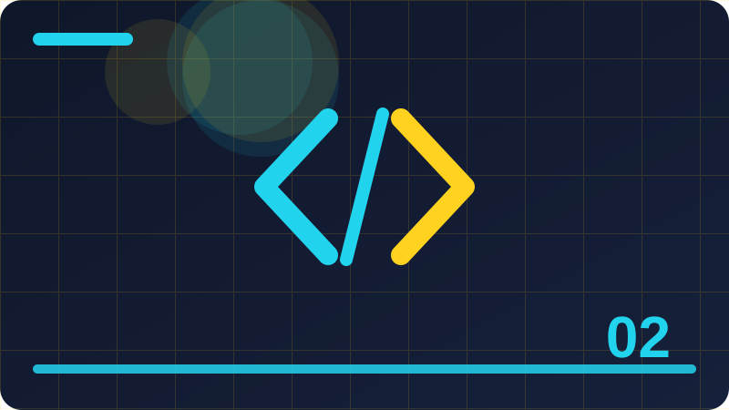

Chapter 2: Variables, Constants and Types

Section 1: What a Variable Is
Learning what a variable is well is worth your time, since it gives you a clear mental picture of what the computer is doing and helps you read other people's Ruby code with far more confidence. This section introduces what a variable is in plain language, with one idea at a time, so that you can follow the reasoning without needing any previous programming experience at all. The goal is not to memorise a definition of what a variable is, but to build a practical understanding that you can use straight away in a small program of your own. Keep asking what each part is for, because purpose is much easier to remember than a list of rules alone.
One helpful habit when studying what a variable is is to ask yourself what value is involved, what action is being performed, and what result you expect to see when the program runs. Ruby is designed to make what a variable is readable, so the code you write should look as close as possible to the way you would explain the same idea in ordinary, careful sentences. When you practise what a variable is, try writing the example yourself rather than only reading it, because typing forces you to notice punctuation, spelling, and order. Those small details are exactly where beginners learn the most, and they are easy to miss when you only read code on a screen.
As you work through what a variable is, keep asking what each part contributes. If you removed one line, would the program still work, would it work differently, or would it fail? That question turns passive reading into active learning. Good Ruby code reads almost like a description of its own behaviour. With what a variable is, aim for code that a reader can follow without a long explanation, because clarity today saves confusion when you return to the code later. Practise by making one deliberate change at a time, and keep a short note of what happened after each change.
If your program does not behave as expected, resist the urge to change many things at once. Change one thing, run it again, and test again, so you learn which change actually fixed the problem. A good habit is to print intermediate results while you are learning what a variable is. Seeing values at each stage makes invisible mistakes visible, and it builds confidence that each step is doing what you think it does. Do not worry if what a variable is feels awkward at first. Awkwardness is normal when a new idea is still unfamiliar, and it fades with a few small programs, not with reading the same explanation many more times. Take a moment now to say the main idea of this section in your own words before you move on, because putting it into your own words is the strongest test that you have understood it. If anything in this section still feels unclear, re-read the example slowly and try one more small change, because a single careful experiment often clears up more confusion than re-reading the same paragraph again.
name = "Ada"
count = 1
puts "Lesson 1: #{name} has count #{count}"Check: In your own words, what does this section teach, and how would you use it in a small Ruby program?
Section 2: Naming a Variable
When you understand naming a variable, you will find it easier to explain your own code, spot a mistake quickly, and decide which approach is the clearest one for the problem in front of you. This section introduces naming a variable in plain language, with one idea at a time, so that you can follow the reasoning without needing any previous programming experience at all. Small ideas that seem simple at first often turn out to be the foundation for much larger programs later on, so give this section your full attention. Read it slowly, try the example yourself, and notice how each small piece connects to the pieces around it.
When you practise naming a variable, try writing the example yourself rather than only reading it. Typing forces you to notice punctuation, spelling, and order, and those small details are exactly where beginners learn the most. The example in the code block below is deliberately short. Short examples are easier to test, easier to break on purpose, and easier to fix, and that cycle of testing and fixing is how real understanding forms. Before you run the example, predict its output and write your prediction down, then compare it with what Ruby actually prints.
It helps to trace the example by hand before you run it. Predict the output, write your prediction down, run the program, and compare. A wrong prediction is not a failure; it shows you precisely what to re-read. As you work through naming a variable, keep asking what each part contributes. If you removed one line, would the program still work, would it work differently, or would it fail? That question turns passive reading into active learning. Good Ruby code reads almost like a description of its own behaviour, so aim for code that a reader can follow without a long explanation, because clarity today saves confusion later.
The most common mistake with naming a variable is rushing. A missing symbol, a wrong spelling, or a slightly different order can stop the program or change the result, so check each line slowly and read error messages from the top. Another frequent pitfall is assuming the computer knows what you meant. It only knows what you wrote, so when naming a variable behaves unexpectedly, compare the code you actually typed with the code you intended to type. Watch out for details that look unimportant but are not. In Ruby, capital letters, punctuation, and the order of instructions all matter, and naming a variable is no exception to that strict but predictable discipline. Take a moment now to say the main idea of this section in your own words before you move on, because putting it into your own words is the strongest test that you have understood it. If anything in this section still feels unclear, re-read the example slowly and try one more small change, because a single careful experiment often clears up more confusion than re-reading the same paragraph again.
name = "Ada"
count = 2
puts "Lesson 2: #{name} has count #{count}"Check: Give one example of this idea from your own life, and explain how you would write it as a small Ruby program?
Section 3: Assigning a Value
The goal of this section is not to memorise a definition of assigning a value, but to build a practical understanding that you can use immediately in a small program of your own. In this section you will take a careful look at assigning a value, because small ideas that seem simple at first often turn out to be the foundation for much larger programs later on. Ruby is designed to make assigning a value readable, so the code you write should look as close as possible to the way you would explain the same idea in ordinary, careful sentences. Work through the section in order, and do not rush past any part that feels unclear.
As you work through assigning a value, notice how each small piece connects to the pieces around it, because programs are rarely about one line alone and almost always about how lines work together. One helpful habit when studying assigning a value is to ask yourself what value is involved, what action is being performed, and what result you expect to see when the program runs. The example in the code block below is deliberately short, so you can type it yourself, run it, and study every line without feeling overwhelmed. Short examples are easier to test, easier to break on purpose, and easier to fix, and that cycle of testing and fixing is how real understanding forms.
As you work through assigning a value, keep asking what each part contributes. If you removed one line, would the program still work, would it work differently, or would it fail? That question turns passive reading into active learning. Good Ruby code reads almost like a description of its own behaviour. With assigning a value, aim for code that a reader can follow without a long explanation, because clarity today saves confusion when you return to the code later. Practise by making one deliberate change at a time, and keep a short note of what happened after each change.
Experienced programmers still make mistakes with assigning a value. The difference is not that they never err, but that they test early, read messages carefully, and fix one small problem before moving on to the next. The most common mistake with assigning a value is rushing. A missing symbol, a wrong spelling, or a slightly different order can stop the program or change the result, so check each line slowly and read error messages from the top. Do not worry if assigning a value feels awkward at first. Awkwardness is normal when a new idea is still unfamiliar, and it fades with a few small programs, not with reading the same explanation many more times. Take a moment now to say the main idea of this section in your own words before you move on, because putting it into your own words is the strongest test that you have understood it. If anything in this section still feels unclear, re-read the example slowly and try one more small change, because a single careful experiment often clears up more confusion than re-reading the same paragraph again.
name = "Ada"
count = 3
puts "Lesson 3: #{name} has count #{count}"Check: What mistake are beginners most likely to make with this idea, and how would you avoid it?
Section 4: Reading a Variable Back
This section takes a careful look at reading a variable back, because small ideas that seem simple at first often turn out to be the foundation for much larger programs later on. Learning reading a variable back well is worth your time, since it gives you a clear mental picture of what the computer is doing and helps you read other people's Ruby code with far more confidence. When you meet reading a variable back in a real program, you should be able to recognise it at a glance and say roughly what it does and why it is there. That recognition skill matters more than memorising every detail on a first reading.
One helpful habit when studying reading a variable back is to ask yourself what value is involved, what action is being performed, and what result you expect to see when the program runs. Ruby is designed to make reading a variable back readable, so the code you write should look as close as possible to the way you would explain the same idea in ordinary, careful sentences. When you practise reading a variable back, try writing the example yourself rather than only reading it, because typing forces you to notice punctuation, spelling, and order. Those small details are exactly where beginners learn the most, and they are easy to miss when you only read code on a screen.
It helps to trace the example by hand before you run it. Predict the output, write your prediction down, run the program, and compare. A wrong prediction is not a failure; it shows you precisely what to re-read. As you work through reading a variable back, keep asking what each part contributes. If you removed one line, would the program still work, would it work differently, or would it fail? That question turns passive reading into active learning. Good Ruby code reads almost like a description of its own behaviour, so aim for code that a reader can follow without a long explanation, because clarity today saves confusion later.
Keep your experiments small while you learn reading a variable back. A tiny program that you fully understand teaches more than a long program copied from somewhere else that you cannot explain or repair. The most common mistake with reading a variable back is rushing. A missing symbol, a wrong spelling, or a slightly different order can stop the program or change the result, so check each line slowly and read error messages from the top. When you finish this section, you should be able to recognise reading a variable back, explain it in plain words, and use it in a small program without copying the example word for word. Take a moment now to say the main idea of this section in your own words before you move on, because putting it into your own words is the strongest test that you have understood it. If anything in this section still feels unclear, re-read the example slowly and try one more small change, because a single careful experiment often clears up more confusion than re-reading the same paragraph again.
name = "Ada"
count = 4
puts "Lesson 4: #{name} has count #{count}"Check: What is the main idea of this section, and how would you explain it in your own words?
Section 5: Changing a Variable's Value
Before you write any code for changing a variable's value, it helps to say in plain words what it is for, because if you can explain it to a friend in two sentences, you already understand most of what this section needs to teach. This section introduces changing a variable's value in plain language, one idea at a time, so you can follow the reasoning without needing any previous programming experience at all. The central idea is straightforward: changing a variable's value gives you a clear and repeatable way to handle one small part of a program, so you do not have to guess or copy code you do not understand.
When you practise changing a variable's value, try writing the example yourself rather than only reading it. Typing forces you to notice punctuation, spelling, and order, and those small details are exactly where beginners learn the most. The example in the code block below is deliberately short. Short examples are easier to test, easier to break on purpose, and easier to fix, and that cycle of testing and fixing is how real understanding forms. Before you run the example, predict its output and write your prediction down, then compare it with what Ruby actually prints.
As you work through changing a variable's value, keep asking what each part contributes. If you removed one line, would the program still work, would it work differently, or would it fail? That question turns passive reading into active learning. Good Ruby code reads almost like a description of its own behaviour. With changing a variable's value, aim for code that a reader can follow without a long explanation, because clarity today saves confusion when you return to the code later. Practise by making one deliberate change at a time, and keep a short note of what happened after each change.
Do not worry if changing a variable's value feels awkward at first. Awkwardness is normal when a new idea is still unfamiliar, and it fades with a few small programs, not with reading the same explanation many more times. Experienced programmers still make mistakes with changing a variable's value. The difference is not that they never err, but that they test early, read messages carefully, and fix one small problem before moving on to the next. Keep your experiments small while you learn changing a variable's value, and celebrate each small program that runs correctly, because those small wins build the confidence you need for larger programs. Take a moment now to say the main idea of this section in your own words before you move on, because putting it into your own words is the strongest test that you have understood it. If anything in this section still feels unclear, re-read the example slowly and try one more small change, because a single careful experiment often clears up more confusion than re-reading the same paragraph again. Remember that steady, small practice matters more than speed here, and that every programmer you admire once worked through these same first steps slowly and carefully.
name = "Ada"
count = 5
puts "Lesson 5: #{name} has count #{count}"Check: Why does this idea matter when you are writing a real Ruby program?
Section 6: Variables as Labelled Boxes
This section introduces variables as labelled boxes in plain language, one idea at a time, so you can follow the reasoning without needing any previous programming experience at all. Learning variables as labelled boxes well is worth your time, because it gives you a clear mental picture of what the computer is doing and helps you read other people's Ruby code with far more confidence. When you understand variables as labelled boxes, you will find it easier to explain your own code, spot a mistake quickly, and decide which approach is clearest for the problem in front of you. Take the ideas slowly here, because this topic will return in many later chapters in new forms.
As you work through variables as labelled boxes, notice how each small piece connects to the pieces around it, because programs are rarely about one line alone and almost always about how lines work together. One helpful habit when studying variables as labelled boxes is to ask yourself what value is involved, what action is being performed, and what result you expect to see when the program runs. The example in the code block below is deliberately short, so you can type it yourself, run it, and study every line without feeling overwhelmed. Short examples are easier to test, easier to break on purpose, and easier to fix, and that cycle of testing and fixing is how real understanding forms.
It helps to trace the example by hand before you run it. Predict the output, write your prediction down, run the program, and compare. A wrong prediction is not a failure; it shows you precisely what to re-read. As you work through variables as labelled boxes, keep asking what each part contributes. If you removed one line, would the program still work, would it work differently, or would it fail? That question turns passive reading into active learning. Good Ruby code reads almost like a description of its own behaviour, so aim for code that a reader can follow without a long explanation, because clarity today saves confusion later.
Watch out for details that look unimportant but are not. In Ruby, capital letters, punctuation, and the order of instructions all matter, and variables as labelled boxes is no exception to that strict but predictable discipline. If your program does not behave as expected, resist the urge to change many things at once. Change one thing, run it again, and test again, so you learn which change actually fixed the problem. A good habit is to print intermediate results while you are learning variables as labelled boxes. Seeing values at each stage makes invisible mistakes visible, and it builds confidence that each step is doing what you think it does. Take a moment now to say the main idea of this section in your own words before you move on, because putting it into your own words is the strongest test that you have understood it. If anything in this section still feels unclear, re-read the example slowly and try one more small change, because a single careful experiment often clears up more confusion than re-reading the same paragraph again.
name = "Ada"
count = 6
puts "Lesson 6: #{name} has count #{count}"Check: What would happen if you changed one important part of the example in this section?
Section 7: Choosing Clear Names
Learning choosing clear names well is worth your time, since it gives you a clear mental picture of what the computer is doing and helps you read other people's Ruby code with far more confidence. This section introduces choosing clear names in plain language, with one idea at a time, so that you can follow the reasoning without needing any previous programming experience at all. The goal is not to memorise a definition of choosing clear names, but to build a practical understanding that you can use straight away in a small program of your own. Keep asking what each part is for, because purpose is much easier to remember than a list of rules alone.
One helpful habit when studying choosing clear names is to ask yourself what value is involved, what action is being performed, and what result you expect to see when the program runs. Ruby is designed to make choosing clear names readable, so the code you write should look as close as possible to the way you would explain the same idea in ordinary, careful sentences. When you practise choosing clear names, try writing the example yourself rather than only reading it, because typing forces you to notice punctuation, spelling, and order. Those small details are exactly where beginners learn the most, and they are easy to miss when you only read code on a screen.
As you work through choosing clear names, keep asking what each part contributes. If you removed one line, would the program still work, would it work differently, or would it fail? That question turns passive reading into active learning. Good Ruby code reads almost like a description of its own behaviour. With choosing clear names, aim for code that a reader can follow without a long explanation, because clarity today saves confusion when you return to the code later. Practise by making one deliberate change at a time, and keep a short note of what happened after each change.
If your program does not behave as expected, resist the urge to change many things at once. Change one thing, run it again, and test again, so you learn which change actually fixed the problem. A good habit is to print intermediate results while you are learning choosing clear names. Seeing values at each stage makes invisible mistakes visible, and it builds confidence that each step is doing what you think it does. Do not worry if choosing clear names feels awkward at first. Awkwardness is normal when a new idea is still unfamiliar, and it fades with a few small programs, not with reading the same explanation many more times. Take a moment now to say the main idea of this section in your own words before you move on, because putting it into your own words is the strongest test that you have understood it. If anything in this section still feels unclear, re-read the example slowly and try one more small change, because a single careful experiment often clears up more confusion than re-reading the same paragraph again.
name = "Ada"
count = 7
puts "Lesson 7: #{name} has count #{count}"Check: In your own words, what does this section teach, and how would you use it in a small Ruby program?
Section 8: Names Ruby Will Not Allow
When you understand names ruby will not allow, you will find it easier to explain your own code, spot a mistake quickly, and decide which approach is the clearest one for the problem in front of you. This section introduces names ruby will not allow in plain language, with one idea at a time, so that you can follow the reasoning without needing any previous programming experience at all. Small ideas that seem simple at first often turn out to be the foundation for much larger programs later on, so give this section your full attention. Read it slowly, try the example yourself, and notice how each small piece connects to the pieces around it.
When you practise names ruby will not allow, try writing the example yourself rather than only reading it. Typing forces you to notice punctuation, spelling, and order, and those small details are exactly where beginners learn the most. The example in the code block below is deliberately short. Short examples are easier to test, easier to break on purpose, and easier to fix, and that cycle of testing and fixing is how real understanding forms. Before you run the example, predict its output and write your prediction down, then compare it with what Ruby actually prints.
It helps to trace the example by hand before you run it. Predict the output, write your prediction down, run the program, and compare. A wrong prediction is not a failure; it shows you precisely what to re-read. As you work through names ruby will not allow, keep asking what each part contributes. If you removed one line, would the program still work, would it work differently, or would it fail? That question turns passive reading into active learning. Good Ruby code reads almost like a description of its own behaviour, so aim for code that a reader can follow without a long explanation, because clarity today saves confusion later.
The most common mistake with names ruby will not allow is rushing. A missing symbol, a wrong spelling, or a slightly different order can stop the program or change the result, so check each line slowly and read error messages from the top. Another frequent pitfall is assuming the computer knows what you meant. It only knows what you wrote, so when names ruby will not allow behaves unexpectedly, compare the code you actually typed with the code you intended to type. Watch out for details that look unimportant but are not. In Ruby, capital letters, punctuation, and the order of instructions all matter, and names ruby will not allow is no exception to that strict but predictable discipline. Take a moment now to say the main idea of this section in your own words before you move on, because putting it into your own words is the strongest test that you have understood it. If anything in this section still feels unclear, re-read the example slowly and try one more small change, because a single careful experiment often clears up more confusion than re-reading the same paragraph again.
name = "Ada"
count = 8
puts "Lesson 8: #{name} has count #{count}"Check: Give one example of this idea from your own life, and explain how you would write it as a small Ruby program?
Section 9: Snake Case in Ruby
The goal of this section is not to memorise a definition of snake case in ruby, but to build a practical understanding that you can use immediately in a small program of your own. In this section you will take a careful look at snake case in ruby, because small ideas that seem simple at first often turn out to be the foundation for much larger programs later on. Ruby is designed to make snake case in ruby readable, so the code you write should look as close as possible to the way you would explain the same idea in ordinary, careful sentences. Work through the section in order, and do not rush past any part that feels unclear.
As you work through snake case in ruby, notice how each small piece connects to the pieces around it, because programs are rarely about one line alone and almost always about how lines work together. One helpful habit when studying snake case in ruby is to ask yourself what value is involved, what action is being performed, and what result you expect to see when the program runs. The example in the code block below is deliberately short, so you can type it yourself, run it, and study every line without feeling overwhelmed. Short examples are easier to test, easier to break on purpose, and easier to fix, and that cycle of testing and fixing is how real understanding forms.
As you work through snake case in ruby, keep asking what each part contributes. If you removed one line, would the program still work, would it work differently, or would it fail? That question turns passive reading into active learning. Good Ruby code reads almost like a description of its own behaviour. With snake case in ruby, aim for code that a reader can follow without a long explanation, because clarity today saves confusion when you return to the code later. Practise by making one deliberate change at a time, and keep a short note of what happened after each change.
Experienced programmers still make mistakes with snake case in ruby. The difference is not that they never err, but that they test early, read messages carefully, and fix one small problem before moving on to the next. The most common mistake with snake case in ruby is rushing. A missing symbol, a wrong spelling, or a slightly different order can stop the program or change the result, so check each line slowly and read error messages from the top. Do not worry if snake case in ruby feels awkward at first. Awkwardness is normal when a new idea is still unfamiliar, and it fades with a few small programs, not with reading the same explanation many more times. Take a moment now to say the main idea of this section in your own words before you move on, because putting it into your own words is the strongest test that you have understood it. If anything in this section still feels unclear, re-read the example slowly and try one more small change, because a single careful experiment often clears up more confusion than re-reading the same paragraph again.
name = "Ada"
count = 9
puts "Lesson 9: #{name} has count #{count}"Check: What mistake are beginners most likely to make with this idea, and how would you avoid it?
Section 10: Variables and Memory in Plain Words
This section takes a careful look at variables and memory in plain words, because small ideas that seem simple at first often turn out to be the foundation for much larger programs later on. Learning variables and memory in plain words well is worth your time, since it gives you a clear mental picture of what the computer is doing and helps you read other people's Ruby code with far more confidence. When you meet variables and memory in plain words in a real program, you should be able to recognise it at a glance and say roughly what it does and why it is there. That recognition skill matters more than memorising every detail on a first reading.
One helpful habit when studying variables and memory in plain words is to ask yourself what value is involved, what action is being performed, and what result you expect to see when the program runs. Ruby is designed to make variables and memory in plain words readable, so the code you write should look as close as possible to the way you would explain the same idea in ordinary, careful sentences. When you practise variables and memory in plain words, try writing the example yourself rather than only reading it, because typing forces you to notice punctuation, spelling, and order. Those small details are exactly where beginners learn the most, and they are easy to miss when you only read code on a screen.
It helps to trace the example by hand before you run it. Predict the output, write your prediction down, run the program, and compare. A wrong prediction is not a failure; it shows you precisely what to re-read. As you work through variables and memory in plain words, keep asking what each part contributes. If you removed one line, would the program still work, would it work differently, or would it fail? That question turns passive reading into active learning. Good Ruby code reads almost like a description of its own behaviour, so aim for code that a reader can follow without a long explanation, because clarity today saves confusion later.
Keep your experiments small while you learn variables and memory in plain words. A tiny program that you fully understand teaches more than a long program copied from somewhere else that you cannot explain or repair. The most common mistake with variables and memory in plain words is rushing. A missing symbol, a wrong spelling, or a slightly different order can stop the program or change the result, so check each line slowly and read error messages from the top. When you finish this section, you should be able to recognise variables and memory in plain words, explain it in plain words, and use it in a small program without copying the example word for word. Take a moment now to say the main idea of this section in your own words before you move on, because putting it into your own words is the strongest test that you have understood it.
name = "Ada"
count = 10
puts "Lesson 10: #{name} has count #{count}"Check: What is the main idea of this section, and how would you explain it in your own words?
Section 11: What a Constant Is
Before you write any code for what a constant is, it helps to say in plain words what it is for, because if you can explain it to a friend in two sentences, you already understand most of what this section needs to teach. This section introduces what a constant is in plain language, one idea at a time, so you can follow the reasoning without needing any previous programming experience at all. The central idea is straightforward: what a constant is gives you a clear and repeatable way to handle one small part of a program, so you do not have to guess or copy code you do not understand.
When you practise what a constant is, try writing the example yourself rather than only reading it. Typing forces you to notice punctuation, spelling, and order, and those small details are exactly where beginners learn the most. The example in the code block below is deliberately short. Short examples are easier to test, easier to break on purpose, and easier to fix, and that cycle of testing and fixing is how real understanding forms. Before you run the example, predict its output and write your prediction down, then compare it with what Ruby actually prints.
As you work through what a constant is, keep asking what each part contributes. If you removed one line, would the program still work, would it work differently, or would it fail? That question turns passive reading into active learning. Good Ruby code reads almost like a description of its own behaviour. With what a constant is, aim for code that a reader can follow without a long explanation, because clarity today saves confusion when you return to the code later. Practise by making one deliberate change at a time, and keep a short note of what happened after each change.
Do not worry if what a constant is feels awkward at first. Awkwardness is normal when a new idea is still unfamiliar, and it fades with a few small programs, not with reading the same explanation many more times. Experienced programmers still make mistakes with what a constant is. The difference is not that they never err, but that they test early, read messages carefully, and fix one small problem before moving on to the next. Keep your experiments small while you learn what a constant is, and celebrate each small program that runs correctly, because those small wins build the confidence you need for larger programs. Take a moment now to say the main idea of this section in your own words before you move on, because putting it into your own words is the strongest test that you have understood it. If anything in this section still feels unclear, re-read the example slowly and try one more small change, because a single careful experiment often clears up more confusion than re-reading the same paragraph again. Remember that steady, small practice matters more than speed here, and that every programmer you admire once worked through these same first steps slowly and carefully.
name = "Ada"
count = 11
puts "Lesson 11: #{name} has count #{count}"Check: Why does this idea matter when you are writing a real Ruby program?
Section 12: Writing Constants in Capitals
This section introduces writing constants in capitals in plain language, one idea at a time, so you can follow the reasoning without needing any previous programming experience at all. Learning writing constants in capitals well is worth your time, because it gives you a clear mental picture of what the computer is doing and helps you read other people's Ruby code with far more confidence. When you understand writing constants in capitals, you will find it easier to explain your own code, spot a mistake quickly, and decide which approach is clearest for the problem in front of you. Take the ideas slowly here, because this topic will return in many later chapters in new forms.
As you work through writing constants in capitals, notice how each small piece connects to the pieces around it, because programs are rarely about one line alone and almost always about how lines work together. One helpful habit when studying writing constants in capitals is to ask yourself what value is involved, what action is being performed, and what result you expect to see when the program runs. The example in the code block below is deliberately short, so you can type it yourself, run it, and study every line without feeling overwhelmed. Short examples are easier to test, easier to break on purpose, and easier to fix, and that cycle of testing and fixing is how real understanding forms.
It helps to trace the example by hand before you run it. Predict the output, write your prediction down, run the program, and compare. A wrong prediction is not a failure; it shows you precisely what to re-read. As you work through writing constants in capitals, keep asking what each part contributes. If you removed one line, would the program still work, would it work differently, or would it fail? That question turns passive reading into active learning. Good Ruby code reads almost like a description of its own behaviour, so aim for code that a reader can follow without a long explanation, because clarity today saves confusion later.
Watch out for details that look unimportant but are not. In Ruby, capital letters, punctuation, and the order of instructions all matter, and writing constants in capitals is no exception to that strict but predictable discipline. If your program does not behave as expected, resist the urge to change many things at once. Change one thing, run it again, and test again, so you learn which change actually fixed the problem. A good habit is to print intermediate results while you are learning writing constants in capitals. Seeing values at each stage makes invisible mistakes visible, and it builds confidence that each step is doing what you think it does. Take a moment now to say the main idea of this section in your own words before you move on, because putting it into your own words is the strongest test that you have understood it. If anything in this section still feels unclear, re-read the example slowly and try one more small change, because a single careful experiment often clears up more confusion than re-reading the same paragraph again.
name = "Ada"
count = 12
puts "Lesson 12: #{name} has count #{count}"Check: What would happen if you changed one important part of the example in this section?
Section 13: Why Constants Stay Fixed
Learning why constants stay fixed well is worth your time, since it gives you a clear mental picture of what the computer is doing and helps you read other people's Ruby code with far more confidence. This section introduces why constants stay fixed in plain language, with one idea at a time, so that you can follow the reasoning without needing any previous programming experience at all. The goal is not to memorise a definition of why constants stay fixed, but to build a practical understanding that you can use straight away in a small program of your own. Keep asking what each part is for, because purpose is much easier to remember than a list of rules alone.
One helpful habit when studying why constants stay fixed is to ask yourself what value is involved, what action is being performed, and what result you expect to see when the program runs. Ruby is designed to make why constants stay fixed readable, so the code you write should look as close as possible to the way you would explain the same idea in ordinary, careful sentences. When you practise why constants stay fixed, try writing the example yourself rather than only reading it, because typing forces you to notice punctuation, spelling, and order. Those small details are exactly where beginners learn the most, and they are easy to miss when you only read code on a screen.
As you work through why constants stay fixed, keep asking what each part contributes. If you removed one line, would the program still work, would it work differently, or would it fail? That question turns passive reading into active learning. Good Ruby code reads almost like a description of its own behaviour. With why constants stay fixed, aim for code that a reader can follow without a long explanation, because clarity today saves confusion when you return to the code later. Practise by making one deliberate change at a time, and keep a short note of what happened after each change.
If your program does not behave as expected, resist the urge to change many things at once. Change one thing, run it again, and test again, so you learn which change actually fixed the problem. A good habit is to print intermediate results while you are learning why constants stay fixed. Seeing values at each stage makes invisible mistakes visible, and it builds confidence that each step is doing what you think it does. Do not worry if why constants stay fixed feels awkward at first. Awkwardness is normal when a new idea is still unfamiliar, and it fades with a few small programs, not with reading the same explanation many more times. Take a moment now to say the main idea of this section in your own words before you move on, because putting it into your own words is the strongest test that you have understood it. If anything in this section still feels unclear, re-read the example slowly and try one more small change, because a single careful experiment often clears up more confusion than re-reading the same paragraph again.
name = "Ada"
count = 13
puts "Lesson 13: #{name} has count #{count}"Check: In your own words, what does this section teach, and how would you use it in a small Ruby program?
Section 14: Constants and Warnings in Plain Words
When you understand constants and warnings in plain words, you will find it easier to explain your own code, spot a mistake quickly, and decide which approach is the clearest one for the problem in front of you. This section introduces constants and warnings in plain words in plain language, with one idea at a time, so that you can follow the reasoning without needing any previous programming experience at all. Small ideas that seem simple at first often turn out to be the foundation for much larger programs later on, so give this section your full attention. Read it slowly, try the example yourself, and notice how each small piece connects to the pieces around it.
When you practise constants and warnings in plain words, try writing the example yourself rather than only reading it. Typing forces you to notice punctuation, spelling, and order, and those small details are exactly where beginners learn the most. The example in the code block below is deliberately short. Short examples are easier to test, easier to break on purpose, and easier to fix, and that cycle of testing and fixing is how real understanding forms. Before you run the example, predict its output and write your prediction down, then compare it with what Ruby actually prints.
It helps to trace the example by hand before you run it. Predict the output, write your prediction down, run the program, and compare. A wrong prediction is not a failure; it shows you precisely what to re-read. As you work through constants and warnings in plain words, keep asking what each part contributes. If you removed one line, would the program still work, would it work differently, or would it fail? That question turns passive reading into active learning. Good Ruby code reads almost like a description of its own behaviour, so aim for code that a reader can follow without a long explanation, because clarity today saves confusion later.
The most common mistake with constants and warnings in plain words is rushing. A missing symbol, a wrong spelling, or a slightly different order can stop the program or change the result, so check each line slowly and read error messages from the top. Another frequent pitfall is assuming the computer knows what you meant. It only knows what you wrote, so when constants and warnings in plain words behaves unexpectedly, compare the code you actually typed with the code you intended to type. Watch out for details that look unimportant but are not. In Ruby, capital letters, punctuation, and the order of instructions all matter, and constants and warnings in plain words is no exception to that strict but predictable discipline. Take a moment now to say the main idea of this section in your own words before you move on, because putting it into your own words is the strongest test that you have understood it. If anything in this section still feels unclear, re-read the example slowly and try one more small change, because a single careful experiment often clears up more confusion than re-reading the same paragraph again.
name = "Ada"
count = 14
puts "Lesson 14: #{name} has count #{count}"Check: Give one example of this idea from your own life, and explain how you would write it as a small Ruby program?
Section 15: Variables Compared with Constants
The goal of this section is not to memorise a definition of variables compared with constants, but to build a practical understanding that you can use immediately in a small program of your own. In this section you will take a careful look at variables compared with constants, because small ideas that seem simple at first often turn out to be the foundation for much larger programs later on. Ruby is designed to make variables compared with constants readable, so the code you write should look as close as possible to the way you would explain the same idea in ordinary, careful sentences. Work through the section in order, and do not rush past any part that feels unclear.
As you work through variables compared with constants, notice how each small piece connects to the pieces around it, because programs are rarely about one line alone and almost always about how lines work together. One helpful habit when studying variables compared with constants is to ask yourself what value is involved, what action is being performed, and what result you expect to see when the program runs. The example in the code block below is deliberately short, so you can type it yourself, run it, and study every line without feeling overwhelmed. Short examples are easier to test, easier to break on purpose, and easier to fix, and that cycle of testing and fixing is how real understanding forms.
As you work through variables compared with constants, keep asking what each part contributes. If you removed one line, would the program still work, would it work differently, or would it fail? That question turns passive reading into active learning. Good Ruby code reads almost like a description of its own behaviour. With variables compared with constants, aim for code that a reader can follow without a long explanation, because clarity today saves confusion when you return to the code later. Practise by making one deliberate change at a time, and keep a short note of what happened after each change.
Experienced programmers still make mistakes with variables compared with constants. The difference is not that they never err, but that they test early, read messages carefully, and fix one small problem before moving on to the next. The most common mistake with variables compared with constants is rushing. A missing symbol, a wrong spelling, or a slightly different order can stop the program or change the result, so check each line slowly and read error messages from the top. Do not worry if variables compared with constants feels awkward at first. Awkwardness is normal when a new idea is still unfamiliar, and it fades with a few small programs, not with reading the same explanation many more times. Take a moment now to say the main idea of this section in your own words before you move on, because putting it into your own words is the strongest test that you have understood it. If anything in this section still feels unclear, re-read the example slowly and try one more small change, because a single careful experiment often clears up more confusion than re-reading the same paragraph again.
name = "Ada"
count = 15
puts "Lesson 15: #{name} has count #{count}"Check: What mistake are beginners most likely to make with this idea, and how would you avoid it?
Section 16: What a Type Is
This section takes a careful look at what a type is, because small ideas that seem simple at first often turn out to be the foundation for much larger programs later on. Learning what a type is well is worth your time, since it gives you a clear mental picture of what the computer is doing and helps you read other people's Ruby code with far more confidence. When you meet what a type is in a real program, you should be able to recognise it at a glance and say roughly what it does and why it is there. That recognition skill matters more than memorising every detail on a first reading.
One helpful habit when studying what a type is is to ask yourself what value is involved, what action is being performed, and what result you expect to see when the program runs. Ruby is designed to make what a type is readable, so the code you write should look as close as possible to the way you would explain the same idea in ordinary, careful sentences. When you practise what a type is, try writing the example yourself rather than only reading it, because typing forces you to notice punctuation, spelling, and order. Those small details are exactly where beginners learn the most, and they are easy to miss when you only read code on a screen.
It helps to trace the example by hand before you run it. Predict the output, write your prediction down, run the program, and compare. A wrong prediction is not a failure; it shows you precisely what to re-read. As you work through what a type is, keep asking what each part contributes. If you removed one line, would the program still work, would it work differently, or would it fail? That question turns passive reading into active learning. Good Ruby code reads almost like a description of its own behaviour, so aim for code that a reader can follow without a long explanation, because clarity today saves confusion later.
Keep your experiments small while you learn what a type is. A tiny program that you fully understand teaches more than a long program copied from somewhere else that you cannot explain or repair. The most common mistake with what a type is is rushing. A missing symbol, a wrong spelling, or a slightly different order can stop the program or change the result, so check each line slowly and read error messages from the top. When you finish this section, you should be able to recognise what a type is, explain it in plain words, and use it in a small program without copying the example word for word. Take a moment now to say the main idea of this section in your own words before you move on, because putting it into your own words is the strongest test that you have understood it. If anything in this section still feels unclear, re-read the example slowly and try one more small change, because a single careful experiment often clears up more confusion than re-reading the same paragraph again.
name = "Ada"
count = 16
puts "Lesson 16: #{name} has count #{count}"Check: What is the main idea of this section, and how would you explain it in your own words?
Section 17: Numbers as a Type
Before you write any code for numbers as a type, it helps to say in plain words what it is for, because if you can explain it to a friend in two sentences, you already understand most of what this section needs to teach. This section introduces numbers as a type in plain language, one idea at a time, so you can follow the reasoning without needing any previous programming experience at all. The central idea is straightforward: numbers as a type gives you a clear and repeatable way to handle one small part of a program, so you do not have to guess or copy code you do not understand.
When you practise numbers as a type, try writing the example yourself rather than only reading it. Typing forces you to notice punctuation, spelling, and order, and those small details are exactly where beginners learn the most. The example in the code block below is deliberately short. Short examples are easier to test, easier to break on purpose, and easier to fix, and that cycle of testing and fixing is how real understanding forms. Before you run the example, predict its output and write your prediction down, then compare it with what Ruby actually prints.
As you work through numbers as a type, keep asking what each part contributes. If you removed one line, would the program still work, would it work differently, or would it fail? That question turns passive reading into active learning. Good Ruby code reads almost like a description of its own behaviour. With numbers as a type, aim for code that a reader can follow without a long explanation, because clarity today saves confusion when you return to the code later. Practise by making one deliberate change at a time, and keep a short note of what happened after each change.
Do not worry if numbers as a type feels awkward at first. Awkwardness is normal when a new idea is still unfamiliar, and it fades with a few small programs, not with reading the same explanation many more times. Experienced programmers still make mistakes with numbers as a type. The difference is not that they never err, but that they test early, read messages carefully, and fix one small problem before moving on to the next. Keep your experiments small while you learn numbers as a type, and celebrate each small program that runs correctly, because those small wins build the confidence you need for larger programs. Take a moment now to say the main idea of this section in your own words before you move on, because putting it into your own words is the strongest test that you have understood it. If anything in this section still feels unclear, re-read the example slowly and try one more small change, because a single careful experiment often clears up more confusion than re-reading the same paragraph again. Remember that steady, small practice matters more than speed here, and that every programmer you admire once worked through these same first steps slowly and carefully.
name = "Ada"
count = 17
puts "Lesson 17: #{name} has count #{count}"Check: Why does this idea matter when you are writing a real Ruby program?
Section 18: Text as a Type
This section introduces text as a type in plain language, one idea at a time, so you can follow the reasoning without needing any previous programming experience at all. Learning text as a type well is worth your time, because it gives you a clear mental picture of what the computer is doing and helps you read other people's Ruby code with far more confidence. When you understand text as a type, you will find it easier to explain your own code, spot a mistake quickly, and decide which approach is clearest for the problem in front of you. Take the ideas slowly here, because this topic will return in many later chapters in new forms.
As you work through text as a type, notice how each small piece connects to the pieces around it, because programs are rarely about one line alone and almost always about how lines work together. One helpful habit when studying text as a type is to ask yourself what value is involved, what action is being performed, and what result you expect to see when the program runs. The example in the code block below is deliberately short, so you can type it yourself, run it, and study every line without feeling overwhelmed. Short examples are easier to test, easier to break on purpose, and easier to fix, and that cycle of testing and fixing is how real understanding forms.
It helps to trace the example by hand before you run it. Predict the output, write your prediction down, run the program, and compare. A wrong prediction is not a failure; it shows you precisely what to re-read. As you work through text as a type, keep asking what each part contributes. If you removed one line, would the program still work, would it work differently, or would it fail? That question turns passive reading into active learning. Good Ruby code reads almost like a description of its own behaviour, so aim for code that a reader can follow without a long explanation, because clarity today saves confusion later.
Watch out for details that look unimportant but are not. In Ruby, capital letters, punctuation, and the order of instructions all matter, and text as a type is no exception to that strict but predictable discipline. If your program does not behave as expected, resist the urge to change many things at once. Change one thing, run it again, and test again, so you learn which change actually fixed the problem. A good habit is to print intermediate results while you are learning text as a type. Seeing values at each stage makes invisible mistakes visible, and it builds confidence that each step is doing what you think it does. Take a moment now to say the main idea of this section in your own words before you move on, because putting it into your own words is the strongest test that you have understood it. If anything in this section still feels unclear, re-read the example slowly and try one more small change, because a single careful experiment often clears up more confusion than re-reading the same paragraph again.
name = "Ada"
count = 18
puts "Lesson 18: #{name} has count #{count}"Check: What would happen if you changed one important part of the example in this section?
Section 19: True and False as a Type
Learning true and false as a type well is worth your time, since it gives you a clear mental picture of what the computer is doing and helps you read other people's Ruby code with far more confidence. This section introduces true and false as a type in plain language, with one idea at a time, so that you can follow the reasoning without needing any previous programming experience at all. The goal is not to memorise a definition of true and false as a type, but to build a practical understanding that you can use straight away in a small program of your own. Keep asking what each part is for, because purpose is much easier to remember than a list of rules alone.
One helpful habit when studying true and false as a type is to ask yourself what value is involved, what action is being performed, and what result you expect to see when the program runs. Ruby is designed to make true and false as a type readable, so the code you write should look as close as possible to the way you would explain the same idea in ordinary, careful sentences. When you practise true and false as a type, try writing the example yourself rather than only reading it, because typing forces you to notice punctuation, spelling, and order. Those small details are exactly where beginners learn the most, and they are easy to miss when you only read code on a screen.
As you work through true and false as a type, keep asking what each part contributes. If you removed one line, would the program still work, would it work differently, or would it fail? That question turns passive reading into active learning. Good Ruby code reads almost like a description of its own behaviour. With true and false as a type, aim for code that a reader can follow without a long explanation, because clarity today saves confusion when you return to the code later. Practise by making one deliberate change at a time, and keep a short note of what happened after each change.
If your program does not behave as expected, resist the urge to change many things at once. Change one thing, run it again, and test again, so you learn which change actually fixed the problem. A good habit is to print intermediate results while you are learning true and false as a type. Seeing values at each stage makes invisible mistakes visible, and it builds confidence that each step is doing what you think it does. Do not worry if true and false as a type feels awkward at first. Awkwardness is normal when a new idea is still unfamiliar, and it fades with a few small programs, not with reading the same explanation many more times. Take a moment now to say the main idea of this section in your own words before you move on, because putting it into your own words is the strongest test that you have understood it.
name = "Ada"
count = 19
puts "Lesson 19: #{name} has count #{count}"Check: In your own words, what does this section teach, and how would you use it in a small Ruby program?
Section 20: Checking a Type with class
When you understand checking a type with class, you will find it easier to explain your own code, spot a mistake quickly, and decide which approach is the clearest one for the problem in front of you. This section introduces checking a type with class in plain language, with one idea at a time, so that you can follow the reasoning without needing any previous programming experience at all. Small ideas that seem simple at first often turn out to be the foundation for much larger programs later on, so give this section your full attention. Read it slowly, try the example yourself, and notice how each small piece connects to the pieces around it.
When you practise checking a type with class, try writing the example yourself rather than only reading it. Typing forces you to notice punctuation, spelling, and order, and those small details are exactly where beginners learn the most. The example in the code block below is deliberately short. Short examples are easier to test, easier to break on purpose, and easier to fix, and that cycle of testing and fixing is how real understanding forms. Before you run the example, predict its output and write your prediction down, then compare it with what Ruby actually prints.
It helps to trace the example by hand before you run it. Predict the output, write your prediction down, run the program, and compare. A wrong prediction is not a failure; it shows you precisely what to re-read. As you work through checking a type with class, keep asking what each part contributes. If you removed one line, would the program still work, would it work differently, or would it fail? That question turns passive reading into active learning. Good Ruby code reads almost like a description of its own behaviour, so aim for code that a reader can follow without a long explanation, because clarity today saves confusion later.
The most common mistake with checking a type with class is rushing. A missing symbol, a wrong spelling, or a slightly different order can stop the program or change the result, so check each line slowly and read error messages from the top. Another frequent pitfall is assuming the computer knows what you meant. It only knows what you wrote, so when checking a type with class behaves unexpectedly, compare the code you actually typed with the code you intended to type. Watch out for details that look unimportant but are not. In Ruby, capital letters, punctuation, and the order of instructions all matter, and checking a type with class is no exception to that strict but predictable discipline. Take a moment now to say the main idea of this section in your own words before you move on, because putting it into your own words is the strongest test that you have understood it. If anything in this section still feels unclear, re-read the example slowly and try one more small change, because a single careful experiment often clears up more confusion than re-reading the same paragraph again.
name = "Ada"
count = 20
puts "Lesson 20: #{name} has count #{count}"Check: Give one example of this idea from your own life, and explain how you would write it as a small Ruby program?
Section 21: One Name, Different Types
The goal of this section is not to memorise a definition of one name, different types, but to build a practical understanding that you can use immediately in a small program of your own. In this section you will take a careful look at one name, different types, because small ideas that seem simple at first often turn out to be the foundation for much larger programs later on. Ruby is designed to make one name, different types readable, so the code you write should look as close as possible to the way you would explain the same idea in ordinary, careful sentences. Work through the section in order, and do not rush past any part that feels unclear.
As you work through one name, different types, notice how each small piece connects to the pieces around it, because programs are rarely about one line alone and almost always about how lines work together. One helpful habit when studying one name, different types is to ask yourself what value is involved, what action is being performed, and what result you expect to see when the program runs. The example in the code block below is deliberately short, so you can type it yourself, run it, and study every line without feeling overwhelmed. Short examples are easier to test, easier to break on purpose, and easier to fix, and that cycle of testing and fixing is how real understanding forms.
As you work through one name, different types, keep asking what each part contributes. If you removed one line, would the program still work, would it work differently, or would it fail? That question turns passive reading into active learning. Good Ruby code reads almost like a description of its own behaviour. With one name, different types, aim for code that a reader can follow without a long explanation, because clarity today saves confusion when you return to the code later. Practise by making one deliberate change at a time, and keep a short note of what happened after each change.
Experienced programmers still make mistakes with one name, different types. The difference is not that they never err, but that they test early, read messages carefully, and fix one small problem before moving on to the next. The most common mistake with one name, different types is rushing. A missing symbol, a wrong spelling, or a slightly different order can stop the program or change the result, so check each line slowly and read error messages from the top. Do not worry if one name, different types feels awkward at first. Awkwardness is normal when a new idea is still unfamiliar, and it fades with a few small programs, not with reading the same explanation many more times. Take a moment now to say the main idea of this section in your own words before you move on, because putting it into your own words is the strongest test that you have understood it. If anything in this section still feels unclear, re-read the example slowly and try one more small change, because a single careful experiment often clears up more confusion than re-reading the same paragraph again.
name = "Ada"
count = 21
puts "Lesson 21: #{name} has count #{count}"Check: What mistake are beginners most likely to make with this idea, and how would you avoid it?
Section 22: Reassigning to a New Type
This section takes a careful look at reassigning to a new type, because small ideas that seem simple at first often turn out to be the foundation for much larger programs later on. Learning reassigning to a new type well is worth your time, since it gives you a clear mental picture of what the computer is doing and helps you read other people's Ruby code with far more confidence. When you meet reassigning to a new type in a real program, you should be able to recognise it at a glance and say roughly what it does and why it is there. That recognition skill matters more than memorising every detail on a first reading.
One helpful habit when studying reassigning to a new type is to ask yourself what value is involved, what action is being performed, and what result you expect to see when the program runs. Ruby is designed to make reassigning to a new type readable, so the code you write should look as close as possible to the way you would explain the same idea in ordinary, careful sentences. When you practise reassigning to a new type, try writing the example yourself rather than only reading it, because typing forces you to notice punctuation, spelling, and order. Those small details are exactly where beginners learn the most, and they are easy to miss when you only read code on a screen.
It helps to trace the example by hand before you run it. Predict the output, write your prediction down, run the program, and compare. A wrong prediction is not a failure; it shows you precisely what to re-read. As you work through reassigning to a new type, keep asking what each part contributes. If you removed one line, would the program still work, would it work differently, or would it fail? That question turns passive reading into active learning. Good Ruby code reads almost like a description of its own behaviour, so aim for code that a reader can follow without a long explanation, because clarity today saves confusion later.
Keep your experiments small while you learn reassigning to a new type. A tiny program that you fully understand teaches more than a long program copied from somewhere else that you cannot explain or repair. The most common mistake with reassigning to a new type is rushing. A missing symbol, a wrong spelling, or a slightly different order can stop the program or change the result, so check each line slowly and read error messages from the top. When you finish this section, you should be able to recognise reassigning to a new type, explain it in plain words, and use it in a small program without copying the example word for word. Take a moment now to say the main idea of this section in your own words before you move on, because putting it into your own words is the strongest test that you have understood it.
name = "Ada"
count = 22
puts "Lesson 22: #{name} has count #{count}"Check: What is the main idea of this section, and how would you explain it in your own words?
Section 23: Why Types Matter
Before you write any code for why types matter, it helps to say in plain words what it is for, because if you can explain it to a friend in two sentences, you already understand most of what this section needs to teach. This section introduces why types matter in plain language, one idea at a time, so you can follow the reasoning without needing any previous programming experience at all. The central idea is straightforward: why types matter gives you a clear and repeatable way to handle one small part of a program, so you do not have to guess or copy code you do not understand.
When you practise why types matter, try writing the example yourself rather than only reading it. Typing forces you to notice punctuation, spelling, and order, and those small details are exactly where beginners learn the most. The example in the code block below is deliberately short. Short examples are easier to test, easier to break on purpose, and easier to fix, and that cycle of testing and fixing is how real understanding forms. Before you run the example, predict its output and write your prediction down, then compare it with what Ruby actually prints.
As you work through why types matter, keep asking what each part contributes. If you removed one line, would the program still work, would it work differently, or would it fail? That question turns passive reading into active learning. Good Ruby code reads almost like a description of its own behaviour. With why types matter, aim for code that a reader can follow without a long explanation, because clarity today saves confusion when you return to the code later. Practise by making one deliberate change at a time, and keep a short note of what happened after each change.
Do not worry if why types matter feels awkward at first. Awkwardness is normal when a new idea is still unfamiliar, and it fades with a few small programs, not with reading the same explanation many more times. Experienced programmers still make mistakes with why types matter. The difference is not that they never err, but that they test early, read messages carefully, and fix one small problem before moving on to the next. Keep your experiments small while you learn why types matter, and celebrate each small program that runs correctly, because those small wins build the confidence you need for larger programs. Take a moment now to say the main idea of this section in your own words before you move on, because putting it into your own words is the strongest test that you have understood it. If anything in this section still feels unclear, re-read the example slowly and try one more small change, because a single careful experiment often clears up more confusion than re-reading the same paragraph again. Remember that steady, small practice matters more than speed here, and that every programmer you admire once worked through these same first steps slowly and carefully.
name = "Ada"
count = 23
puts "Lesson 23: #{name} has count #{count}"Check: Why does this idea matter when you are writing a real Ruby program?
Section 24: Type Errors in Plain Words
This section introduces type errors in plain words in plain language, one idea at a time, so you can follow the reasoning without needing any previous programming experience at all. Learning type errors in plain words well is worth your time, because it gives you a clear mental picture of what the computer is doing and helps you read other people's Ruby code with far more confidence. When you understand type errors in plain words, you will find it easier to explain your own code, spot a mistake quickly, and decide which approach is clearest for the problem in front of you. Take the ideas slowly here, because this topic will return in many later chapters in new forms.
As you work through type errors in plain words, notice how each small piece connects to the pieces around it, because programs are rarely about one line alone and almost always about how lines work together. One helpful habit when studying type errors in plain words is to ask yourself what value is involved, what action is being performed, and what result you expect to see when the program runs. The example in the code block below is deliberately short, so you can type it yourself, run it, and study every line without feeling overwhelmed. Short examples are easier to test, easier to break on purpose, and easier to fix, and that cycle of testing and fixing is how real understanding forms.
It helps to trace the example by hand before you run it. Predict the output, write your prediction down, run the program, and compare. A wrong prediction is not a failure; it shows you precisely what to re-read. As you work through type errors in plain words, keep asking what each part contributes. If you removed one line, would the program still work, would it work differently, or would it fail? That question turns passive reading into active learning. Good Ruby code reads almost like a description of its own behaviour, so aim for code that a reader can follow without a long explanation, because clarity today saves confusion later.
Watch out for details that look unimportant but are not. In Ruby, capital letters, punctuation, and the order of instructions all matter, and type errors in plain words is no exception to that strict but predictable discipline. If your program does not behave as expected, resist the urge to change many things at once. Change one thing, run it again, and test again, so you learn which change actually fixed the problem. A good habit is to print intermediate results while you are learning type errors in plain words. Seeing values at each stage makes invisible mistakes visible, and it builds confidence that each step is doing what you think it does. Take a moment now to say the main idea of this section in your own words before you move on, because putting it into your own words is the strongest test that you have understood it.
name = "Ada"
count = 24
puts "Lesson 24: #{name} has count #{count}"Check: What would happen if you changed one important part of the example in this section?
Section 25: Converting Between Types
Learning converting between types well is worth your time, since it gives you a clear mental picture of what the computer is doing and helps you read other people's Ruby code with far more confidence. This section introduces converting between types in plain language, with one idea at a time, so that you can follow the reasoning without needing any previous programming experience at all. The goal is not to memorise a definition of converting between types, but to build a practical understanding that you can use straight away in a small program of your own. Keep asking what each part is for, because purpose is much easier to remember than a list of rules alone.
One helpful habit when studying converting between types is to ask yourself what value is involved, what action is being performed, and what result you expect to see when the program runs. Ruby is designed to make converting between types readable, so the code you write should look as close as possible to the way you would explain the same idea in ordinary, careful sentences. When you practise converting between types, try writing the example yourself rather than only reading it, because typing forces you to notice punctuation, spelling, and order. Those small details are exactly where beginners learn the most, and they are easy to miss when you only read code on a screen.
As you work through converting between types, keep asking what each part contributes. If you removed one line, would the program still work, would it work differently, or would it fail? That question turns passive reading into active learning. Good Ruby code reads almost like a description of its own behaviour. With converting between types, aim for code that a reader can follow without a long explanation, because clarity today saves confusion when you return to the code later. Practise by making one deliberate change at a time, and keep a short note of what happened after each change.
If your program does not behave as expected, resist the urge to change many things at once. Change one thing, run it again, and test again, so you learn which change actually fixed the problem. A good habit is to print intermediate results while you are learning converting between types. Seeing values at each stage makes invisible mistakes visible, and it builds confidence that each step is doing what you think it does. Do not worry if converting between types feels awkward at first. Awkwardness is normal when a new idea is still unfamiliar, and it fades with a few small programs, not with reading the same explanation many more times. Take a moment now to say the main idea of this section in your own words before you move on, because putting it into your own words is the strongest test that you have understood it. If anything in this section still feels unclear, re-read the example slowly and try one more small change, because a single careful experiment often clears up more confusion than re-reading the same paragraph again.
name = "Ada"
count = 25
puts "Lesson 25: #{name} has count #{count}"Check: In your own words, what does this section teach, and how would you use it in a small Ruby program?
Section 26: Numbers to Text and Back
When you understand numbers to text and back, you will find it easier to explain your own code, spot a mistake quickly, and decide which approach is the clearest one for the problem in front of you. This section introduces numbers to text and back in plain language, with one idea at a time, so that you can follow the reasoning without needing any previous programming experience at all. Small ideas that seem simple at first often turn out to be the foundation for much larger programs later on, so give this section your full attention. Read it slowly, try the example yourself, and notice how each small piece connects to the pieces around it.
When you practise numbers to text and back, try writing the example yourself rather than only reading it. Typing forces you to notice punctuation, spelling, and order, and those small details are exactly where beginners learn the most. The example in the code block below is deliberately short. Short examples are easier to test, easier to break on purpose, and easier to fix, and that cycle of testing and fixing is how real understanding forms. Before you run the example, predict its output and write your prediction down, then compare it with what Ruby actually prints.
It helps to trace the example by hand before you run it. Predict the output, write your prediction down, run the program, and compare. A wrong prediction is not a failure; it shows you precisely what to re-read. As you work through numbers to text and back, keep asking what each part contributes. If you removed one line, would the program still work, would it work differently, or would it fail? That question turns passive reading into active learning. Good Ruby code reads almost like a description of its own behaviour, so aim for code that a reader can follow without a long explanation, because clarity today saves confusion later.
The most common mistake with numbers to text and back is rushing. A missing symbol, a wrong spelling, or a slightly different order can stop the program or change the result, so check each line slowly and read error messages from the top. Another frequent pitfall is assuming the computer knows what you meant. It only knows what you wrote, so when numbers to text and back behaves unexpectedly, compare the code you actually typed with the code you intended to type. Watch out for details that look unimportant but are not. In Ruby, capital letters, punctuation, and the order of instructions all matter, and numbers to text and back is no exception to that strict but predictable discipline. Take a moment now to say the main idea of this section in your own words before you move on, because putting it into your own words is the strongest test that you have understood it. If anything in this section still feels unclear, re-read the example slowly and try one more small change, because a single careful experiment often clears up more confusion than re-reading the same paragraph again.
name = "Ada"
count = 26
puts "Lesson 26: #{name} has count #{count}"Check: Give one example of this idea from your own life, and explain how you would write it as a small Ruby program?
Section 27: Asking the User for Input
The goal of this section is not to memorise a definition of asking the user for input, but to build a practical understanding that you can use immediately in a small program of your own. In this section you will take a careful look at asking the user for input, because small ideas that seem simple at first often turn out to be the foundation for much larger programs later on. Ruby is designed to make asking the user for input readable, so the code you write should look as close as possible to the way you would explain the same idea in ordinary, careful sentences. Work through the section in order, and do not rush past any part that feels unclear.
As you work through asking the user for input, notice how each small piece connects to the pieces around it, because programs are rarely about one line alone and almost always about how lines work together. One helpful habit when studying asking the user for input is to ask yourself what value is involved, what action is being performed, and what result you expect to see when the program runs. The example in the code block below is deliberately short, so you can type it yourself, run it, and study every line without feeling overwhelmed. Short examples are easier to test, easier to break on purpose, and easier to fix, and that cycle of testing and fixing is how real understanding forms.
As you work through asking the user for input, keep asking what each part contributes. If you removed one line, would the program still work, would it work differently, or would it fail? That question turns passive reading into active learning. Good Ruby code reads almost like a description of its own behaviour. With asking the user for input, aim for code that a reader can follow without a long explanation, because clarity today saves confusion when you return to the code later. Practise by making one deliberate change at a time, and keep a short note of what happened after each change.
Experienced programmers still make mistakes with asking the user for input. The difference is not that they never err, but that they test early, read messages carefully, and fix one small problem before moving on to the next. The most common mistake with asking the user for input is rushing. A missing symbol, a wrong spelling, or a slightly different order can stop the program or change the result, so check each line slowly and read error messages from the top. Do not worry if asking the user for input feels awkward at first. Awkwardness is normal when a new idea is still unfamiliar, and it fades with a few small programs, not with reading the same explanation many more times. Take a moment now to say the main idea of this section in your own words before you move on, because putting it into your own words is the strongest test that you have understood it.
name = "Ada"
count = 27
puts "Lesson 27: #{name} has count #{count}"Check: What mistake are beginners most likely to make with this idea, and how would you avoid it?
Section 28: Input Always Arrives as Text
This section takes a careful look at input always arrives as text, because small ideas that seem simple at first often turn out to be the foundation for much larger programs later on. Learning input always arrives as text well is worth your time, since it gives you a clear mental picture of what the computer is doing and helps you read other people's Ruby code with far more confidence. When you meet input always arrives as text in a real program, you should be able to recognise it at a glance and say roughly what it does and why it is there. That recognition skill matters more than memorising every detail on a first reading.
One helpful habit when studying input always arrives as text is to ask yourself what value is involved, what action is being performed, and what result you expect to see when the program runs. Ruby is designed to make input always arrives as text readable, so the code you write should look as close as possible to the way you would explain the same idea in ordinary, careful sentences. When you practise input always arrives as text, try writing the example yourself rather than only reading it, because typing forces you to notice punctuation, spelling, and order. Those small details are exactly where beginners learn the most, and they are easy to miss when you only read code on a screen.
It helps to trace the example by hand before you run it. Predict the output, write your prediction down, run the program, and compare. A wrong prediction is not a failure; it shows you precisely what to re-read. As you work through input always arrives as text, keep asking what each part contributes. If you removed one line, would the program still work, would it work differently, or would it fail? That question turns passive reading into active learning. Good Ruby code reads almost like a description of its own behaviour, so aim for code that a reader can follow without a long explanation, because clarity today saves confusion later.
Keep your experiments small while you learn input always arrives as text. A tiny program that you fully understand teaches more than a long program copied from somewhere else that you cannot explain or repair. The most common mistake with input always arrives as text is rushing. A missing symbol, a wrong spelling, or a slightly different order can stop the program or change the result, so check each line slowly and read error messages from the top. When you finish this section, you should be able to recognise input always arrives as text, explain it in plain words, and use it in a small program without copying the example word for word. Take a moment now to say the main idea of this section in your own words before you move on, because putting it into your own words is the strongest test that you have understood it.
name = "Ada"
count = 28
puts "Lesson 28: #{name} has count #{count}"Check: What is the main idea of this section, and how would you explain it in your own words?
Section 29: Turning Input into a Number
Before you write any code for turning input into a number, it helps to say in plain words what it is for, because if you can explain it to a friend in two sentences, you already understand most of what this section needs to teach. This section introduces turning input into a number in plain language, one idea at a time, so you can follow the reasoning without needing any previous programming experience at all. The central idea is straightforward: turning input into a number gives you a clear and repeatable way to handle one small part of a program, so you do not have to guess or copy code you do not understand.
When you practise turning input into a number, try writing the example yourself rather than only reading it. Typing forces you to notice punctuation, spelling, and order, and those small details are exactly where beginners learn the most. The example in the code block below is deliberately short. Short examples are easier to test, easier to break on purpose, and easier to fix, and that cycle of testing and fixing is how real understanding forms. Before you run the example, predict its output and write your prediction down, then compare it with what Ruby actually prints.
As you work through turning input into a number, keep asking what each part contributes. If you removed one line, would the program still work, would it work differently, or would it fail? That question turns passive reading into active learning. Good Ruby code reads almost like a description of its own behaviour. With turning input into a number, aim for code that a reader can follow without a long explanation, because clarity today saves confusion when you return to the code later. Practise by making one deliberate change at a time, and keep a short note of what happened after each change.
Do not worry if turning input into a number feels awkward at first. Awkwardness is normal when a new idea is still unfamiliar, and it fades with a few small programs, not with reading the same explanation many more times. Experienced programmers still make mistakes with turning input into a number. The difference is not that they never err, but that they test early, read messages carefully, and fix one small problem before moving on to the next. Keep your experiments small while you learn turning input into a number, and celebrate each small program that runs correctly, because those small wins build the confidence you need for larger programs. Take a moment now to say the main idea of this section in your own words before you move on, because putting it into your own words is the strongest test that you have understood it. If anything in this section still feels unclear, re-read the example slowly and try one more small change, because a single careful experiment often clears up more confusion than re-reading the same paragraph again. Remember that steady, small practice matters more than speed here, and that every programmer you admire once worked through these same first steps slowly and carefully.
name = "Ada"
count = 29
puts "Lesson 29: #{name} has count #{count}"Check: Why does this idea matter when you are writing a real Ruby program?
Section 30: A First Calculator with Variables
This section introduces a first calculator with variables in plain language, one idea at a time, so you can follow the reasoning without needing any previous programming experience at all. Learning a first calculator with variables well is worth your time, because it gives you a clear mental picture of what the computer is doing and helps you read other people's Ruby code with far more confidence. When you understand a first calculator with variables, you will find it easier to explain your own code, spot a mistake quickly, and decide which approach is clearest for the problem in front of you. Take the ideas slowly here, because this topic will return in many later chapters in new forms.
As you work through a first calculator with variables, notice how each small piece connects to the pieces around it, because programs are rarely about one line alone and almost always about how lines work together. One helpful habit when studying a first calculator with variables is to ask yourself what value is involved, what action is being performed, and what result you expect to see when the program runs. The example in the code block below is deliberately short, so you can type it yourself, run it, and study every line without feeling overwhelmed. Short examples are easier to test, easier to break on purpose, and easier to fix, and that cycle of testing and fixing is how real understanding forms.
It helps to trace the example by hand before you run it. Predict the output, write your prediction down, run the program, and compare. A wrong prediction is not a failure; it shows you precisely what to re-read. As you work through a first calculator with variables, keep asking what each part contributes. If you removed one line, would the program still work, would it work differently, or would it fail? That question turns passive reading into active learning. Good Ruby code reads almost like a description of its own behaviour, so aim for code that a reader can follow without a long explanation, because clarity today saves confusion later.
Watch out for details that look unimportant but are not. In Ruby, capital letters, punctuation, and the order of instructions all matter, and a first calculator with variables is no exception to that strict but predictable discipline. If your program does not behave as expected, resist the urge to change many things at once. Change one thing, run it again, and test again, so you learn which change actually fixed the problem. A good habit is to print intermediate results while you are learning a first calculator with variables. Seeing values at each stage makes invisible mistakes visible, and it builds confidence that each step is doing what you think it does. Take a moment now to say the main idea of this section in your own words before you move on, because putting it into your own words is the strongest test that you have understood it.
name = "Ada"
count = 30
puts "Lesson 30: #{name} has count #{count}"Check: What would happen if you changed one important part of the example in this section?
Section 31: Using Several Variables Together
Learning using several variables together well is worth your time, since it gives you a clear mental picture of what the computer is doing and helps you read other people's Ruby code with far more confidence. This section introduces using several variables together in plain language, with one idea at a time, so that you can follow the reasoning without needing any previous programming experience at all. The goal is not to memorise a definition of using several variables together, but to build a practical understanding that you can use straight away in a small program of your own. Keep asking what each part is for, because purpose is much easier to remember than a list of rules alone.
One helpful habit when studying using several variables together is to ask yourself what value is involved, what action is being performed, and what result you expect to see when the program runs. Ruby is designed to make using several variables together readable, so the code you write should look as close as possible to the way you would explain the same idea in ordinary, careful sentences. When you practise using several variables together, try writing the example yourself rather than only reading it, because typing forces you to notice punctuation, spelling, and order. Those small details are exactly where beginners learn the most, and they are easy to miss when you only read code on a screen.
As you work through using several variables together, keep asking what each part contributes. If you removed one line, would the program still work, would it work differently, or would it fail? That question turns passive reading into active learning. Good Ruby code reads almost like a description of its own behaviour. With using several variables together, aim for code that a reader can follow without a long explanation, because clarity today saves confusion when you return to the code later. Practise by making one deliberate change at a time, and keep a short note of what happened after each change.
If your program does not behave as expected, resist the urge to change many things at once. Change one thing, run it again, and test again, so you learn which change actually fixed the problem. A good habit is to print intermediate results while you are learning using several variables together. Seeing values at each stage makes invisible mistakes visible, and it builds confidence that each step is doing what you think it does. Do not worry if using several variables together feels awkward at first. Awkwardness is normal when a new idea is still unfamiliar, and it fades with a few small programs, not with reading the same explanation many more times. Take a moment now to say the main idea of this section in your own words before you move on, because putting it into your own words is the strongest test that you have understood it. If anything in this section still feels unclear, re-read the example slowly and try one more small change, because a single careful experiment often clears up more confusion than re-reading the same paragraph again.
name = "Ada"
count = 31
puts "Lesson 31: #{name} has count #{count}"Check: In your own words, what does this section teach, and how would you use it in a small Ruby program?
Section 32: Copying One Variable into Another
When you understand copying one variable into another, you will find it easier to explain your own code, spot a mistake quickly, and decide which approach is the clearest one for the problem in front of you. This section introduces copying one variable into another in plain language, with one idea at a time, so that you can follow the reasoning without needing any previous programming experience at all. Small ideas that seem simple at first often turn out to be the foundation for much larger programs later on, so give this section your full attention. Read it slowly, try the example yourself, and notice how each small piece connects to the pieces around it.
When you practise copying one variable into another, try writing the example yourself rather than only reading it. Typing forces you to notice punctuation, spelling, and order, and those small details are exactly where beginners learn the most. The example in the code block below is deliberately short. Short examples are easier to test, easier to break on purpose, and easier to fix, and that cycle of testing and fixing is how real understanding forms. Before you run the example, predict its output and write your prediction down, then compare it with what Ruby actually prints.
It helps to trace the example by hand before you run it. Predict the output, write your prediction down, run the program, and compare. A wrong prediction is not a failure; it shows you precisely what to re-read. As you work through copying one variable into another, keep asking what each part contributes. If you removed one line, would the program still work, would it work differently, or would it fail? That question turns passive reading into active learning. Good Ruby code reads almost like a description of its own behaviour, so aim for code that a reader can follow without a long explanation, because clarity today saves confusion later.
The most common mistake with copying one variable into another is rushing. A missing symbol, a wrong spelling, or a slightly different order can stop the program or change the result, so check each line slowly and read error messages from the top. Another frequent pitfall is assuming the computer knows what you meant. It only knows what you wrote, so when copying one variable into another behaves unexpectedly, compare the code you actually typed with the code you intended to type. Watch out for details that look unimportant but are not. In Ruby, capital letters, punctuation, and the order of instructions all matter, and copying one variable into another is no exception to that strict but predictable discipline. Take a moment now to say the main idea of this section in your own words before you move on, because putting it into your own words is the strongest test that you have understood it. If anything in this section still feels unclear, re-read the example slowly and try one more small change, because a single careful experiment often clears up more confusion than re-reading the same paragraph again.
name = "Ada"
count = 32
puts "Lesson 32: #{name} has count #{count}"Check: Give one example of this idea from your own life, and explain how you would write it as a small Ruby program?
Section 33: Two Names for the Same Value
The goal of this section is not to memorise a definition of two names for the same value, but to build a practical understanding that you can use immediately in a small program of your own. In this section you will take a careful look at two names for the same value, because small ideas that seem simple at first often turn out to be the foundation for much larger programs later on. Ruby is designed to make two names for the same value readable, so the code you write should look as close as possible to the way you would explain the same idea in ordinary, careful sentences. Work through the section in order, and do not rush past any part that feels unclear.
As you work through two names for the same value, notice how each small piece connects to the pieces around it, because programs are rarely about one line alone and almost always about how lines work together. One helpful habit when studying two names for the same value is to ask yourself what value is involved, what action is being performed, and what result you expect to see when the program runs. The example in the code block below is deliberately short, so you can type it yourself, run it, and study every line without feeling overwhelmed. Short examples are easier to test, easier to break on purpose, and easier to fix, and that cycle of testing and fixing is how real understanding forms.
As you work through two names for the same value, keep asking what each part contributes. If you removed one line, would the program still work, would it work differently, or would it fail? That question turns passive reading into active learning. Good Ruby code reads almost like a description of its own behaviour. With two names for the same value, aim for code that a reader can follow without a long explanation, because clarity today saves confusion when you return to the code later. Practise by making one deliberate change at a time, and keep a short note of what happened after each change.
Experienced programmers still make mistakes with two names for the same value. The difference is not that they never err, but that they test early, read messages carefully, and fix one small problem before moving on to the next. The most common mistake with two names for the same value is rushing. A missing symbol, a wrong spelling, or a slightly different order can stop the program or change the result, so check each line slowly and read error messages from the top. Do not worry if two names for the same value feels awkward at first. Awkwardness is normal when a new idea is still unfamiliar, and it fades with a few small programs, not with reading the same explanation many more times. Take a moment now to say the main idea of this section in your own words before you move on, because putting it into your own words is the strongest test that you have understood it.
name = "Ada"
count = 33
puts "Lesson 33: #{name} has count #{count}"Check: What mistake are beginners most likely to make with this idea, and how would you avoid it?
Section 34: Swapping Two Values
This section takes a careful look at swapping two values, because small ideas that seem simple at first often turn out to be the foundation for much larger programs later on. Learning swapping two values well is worth your time, since it gives you a clear mental picture of what the computer is doing and helps you read other people's Ruby code with far more confidence. When you meet swapping two values in a real program, you should be able to recognise it at a glance and say roughly what it does and why it is there. That recognition skill matters more than memorising every detail on a first reading.
One helpful habit when studying swapping two values is to ask yourself what value is involved, what action is being performed, and what result you expect to see when the program runs. Ruby is designed to make swapping two values readable, so the code you write should look as close as possible to the way you would explain the same idea in ordinary, careful sentences. When you practise swapping two values, try writing the example yourself rather than only reading it, because typing forces you to notice punctuation, spelling, and order. Those small details are exactly where beginners learn the most, and they are easy to miss when you only read code on a screen.
It helps to trace the example by hand before you run it. Predict the output, write your prediction down, run the program, and compare. A wrong prediction is not a failure; it shows you precisely what to re-read. As you work through swapping two values, keep asking what each part contributes. If you removed one line, would the program still work, would it work differently, or would it fail? That question turns passive reading into active learning. Good Ruby code reads almost like a description of its own behaviour, so aim for code that a reader can follow without a long explanation, because clarity today saves confusion later.
Keep your experiments small while you learn swapping two values. A tiny program that you fully understand teaches more than a long program copied from somewhere else that you cannot explain or repair. The most common mistake with swapping two values is rushing. A missing symbol, a wrong spelling, or a slightly different order can stop the program or change the result, so check each line slowly and read error messages from the top. When you finish this section, you should be able to recognise swapping two values, explain it in plain words, and use it in a small program without copying the example word for word. Take a moment now to say the main idea of this section in your own words before you move on, because putting it into your own words is the strongest test that you have understood it. If anything in this section still feels unclear, re-read the example slowly and try one more small change, because a single careful experiment often clears up more confusion than re-reading the same paragraph again.
name = "Ada"
count = 34
puts "Lesson 34: #{name} has count #{count}"Check: What is the main idea of this section, and how would you explain it in your own words?
Section 35: Counting with a Variable
Before you write any code for counting with a variable, it helps to say in plain words what it is for, because if you can explain it to a friend in two sentences, you already understand most of what this section needs to teach. This section introduces counting with a variable in plain language, one idea at a time, so you can follow the reasoning without needing any previous programming experience at all. The central idea is straightforward: counting with a variable gives you a clear and repeatable way to handle one small part of a program, so you do not have to guess or copy code you do not understand.
When you practise counting with a variable, try writing the example yourself rather than only reading it. Typing forces you to notice punctuation, spelling, and order, and those small details are exactly where beginners learn the most. The example in the code block below is deliberately short. Short examples are easier to test, easier to break on purpose, and easier to fix, and that cycle of testing and fixing is how real understanding forms. Before you run the example, predict its output and write your prediction down, then compare it with what Ruby actually prints.
As you work through counting with a variable, keep asking what each part contributes. If you removed one line, would the program still work, would it work differently, or would it fail? That question turns passive reading into active learning. Good Ruby code reads almost like a description of its own behaviour. With counting with a variable, aim for code that a reader can follow without a long explanation, because clarity today saves confusion when you return to the code later. Practise by making one deliberate change at a time, and keep a short note of what happened after each change.
Do not worry if counting with a variable feels awkward at first. Awkwardness is normal when a new idea is still unfamiliar, and it fades with a few small programs, not with reading the same explanation many more times. Experienced programmers still make mistakes with counting with a variable. The difference is not that they never err, but that they test early, read messages carefully, and fix one small problem before moving on to the next. Keep your experiments small while you learn counting with a variable, and celebrate each small program that runs correctly, because those small wins build the confidence you need for larger programs. Take a moment now to say the main idea of this section in your own words before you move on, because putting it into your own words is the strongest test that you have understood it. If anything in this section still feels unclear, re-read the example slowly and try one more small change, because a single careful experiment often clears up more confusion than re-reading the same paragraph again. Remember that steady, small practice matters more than speed here, and that every programmer you admire once worked through these same first steps slowly and carefully.
name = "Ada"
count = 35
puts "Lesson 35: #{name} has count #{count}"Check: Why does this idea matter when you are writing a real Ruby program?
Section 36: Storing a Name and a Greeting
This section introduces storing a name and a greeting in plain language, one idea at a time, so you can follow the reasoning without needing any previous programming experience at all. Learning storing a name and a greeting well is worth your time, because it gives you a clear mental picture of what the computer is doing and helps you read other people's Ruby code with far more confidence. When you understand storing a name and a greeting, you will find it easier to explain your own code, spot a mistake quickly, and decide which approach is clearest for the problem in front of you. Take the ideas slowly here, because this topic will return in many later chapters in new forms.
As you work through storing a name and a greeting, notice how each small piece connects to the pieces around it, because programs are rarely about one line alone and almost always about how lines work together. One helpful habit when studying storing a name and a greeting is to ask yourself what value is involved, what action is being performed, and what result you expect to see when the program runs. The example in the code block below is deliberately short, so you can type it yourself, run it, and study every line without feeling overwhelmed. Short examples are easier to test, easier to break on purpose, and easier to fix, and that cycle of testing and fixing is how real understanding forms.
It helps to trace the example by hand before you run it. Predict the output, write your prediction down, run the program, and compare. A wrong prediction is not a failure; it shows you precisely what to re-read. As you work through storing a name and a greeting, keep asking what each part contributes. If you removed one line, would the program still work, would it work differently, or would it fail? That question turns passive reading into active learning. Good Ruby code reads almost like a description of its own behaviour, so aim for code that a reader can follow without a long explanation, because clarity today saves confusion later.
Watch out for details that look unimportant but are not. In Ruby, capital letters, punctuation, and the order of instructions all matter, and storing a name and a greeting is no exception to that strict but predictable discipline. If your program does not behave as expected, resist the urge to change many things at once. Change one thing, run it again, and test again, so you learn which change actually fixed the problem. A good habit is to print intermediate results while you are learning storing a name and a greeting. Seeing values at each stage makes invisible mistakes visible, and it builds confidence that each step is doing what you think it does. Take a moment now to say the main idea of this section in your own words before you move on, because putting it into your own words is the strongest test that you have understood it.
name = "Ada"
count = 36
puts "Lesson 36: #{name} has count #{count}"Check: What would happen if you changed one important part of the example in this section?
Section 37: Keeping a Running Total
Learning keeping a running total well is worth your time, since it gives you a clear mental picture of what the computer is doing and helps you read other people's Ruby code with far more confidence. This section introduces keeping a running total in plain language, with one idea at a time, so that you can follow the reasoning without needing any previous programming experience at all. The goal is not to memorise a definition of keeping a running total, but to build a practical understanding that you can use straight away in a small program of your own. Keep asking what each part is for, because purpose is much easier to remember than a list of rules alone.
One helpful habit when studying keeping a running total is to ask yourself what value is involved, what action is being performed, and what result you expect to see when the program runs. Ruby is designed to make keeping a running total readable, so the code you write should look as close as possible to the way you would explain the same idea in ordinary, careful sentences. When you practise keeping a running total, try writing the example yourself rather than only reading it, because typing forces you to notice punctuation, spelling, and order. Those small details are exactly where beginners learn the most, and they are easy to miss when you only read code on a screen.
As you work through keeping a running total, keep asking what each part contributes. If you removed one line, would the program still work, would it work differently, or would it fail? That question turns passive reading into active learning. Good Ruby code reads almost like a description of its own behaviour. With keeping a running total, aim for code that a reader can follow without a long explanation, because clarity today saves confusion when you return to the code later. Practise by making one deliberate change at a time, and keep a short note of what happened after each change.
If your program does not behave as expected, resist the urge to change many things at once. Change one thing, run it again, and test again, so you learn which change actually fixed the problem. A good habit is to print intermediate results while you are learning keeping a running total. Seeing values at each stage makes invisible mistakes visible, and it builds confidence that each step is doing what you think it does. Do not worry if keeping a running total feels awkward at first. Awkwardness is normal when a new idea is still unfamiliar, and it fades with a few small programs, not with reading the same explanation many more times. Take a moment now to say the main idea of this section in your own words before you move on, because putting it into your own words is the strongest test that you have understood it. If anything in this section still feels unclear, re-read the example slowly and try one more small change, because a single careful experiment often clears up more confusion than re-reading the same paragraph again.
name = "Ada"
count = 37
puts "Lesson 37: #{name} has count #{count}"Check: In your own words, what does this section teach, and how would you use it in a small Ruby program?
Section 38: Variables in a Short Story Program
When you understand variables in a short story program, you will find it easier to explain your own code, spot a mistake quickly, and decide which approach is the clearest one for the problem in front of you. This section introduces variables in a short story program in plain language, with one idea at a time, so that you can follow the reasoning without needing any previous programming experience at all. Small ideas that seem simple at first often turn out to be the foundation for much larger programs later on, so give this section your full attention. Read it slowly, try the example yourself, and notice how each small piece connects to the pieces around it.
When you practise variables in a short story program, try writing the example yourself rather than only reading it. Typing forces you to notice punctuation, spelling, and order, and those small details are exactly where beginners learn the most. The example in the code block below is deliberately short. Short examples are easier to test, easier to break on purpose, and easier to fix, and that cycle of testing and fixing is how real understanding forms. Before you run the example, predict its output and write your prediction down, then compare it with what Ruby actually prints.
It helps to trace the example by hand before you run it. Predict the output, write your prediction down, run the program, and compare. A wrong prediction is not a failure; it shows you precisely what to re-read. As you work through variables in a short story program, keep asking what each part contributes. If you removed one line, would the program still work, would it work differently, or would it fail? That question turns passive reading into active learning. Good Ruby code reads almost like a description of its own behaviour, so aim for code that a reader can follow without a long explanation, because clarity today saves confusion later.
The most common mistake with variables in a short story program is rushing. A missing symbol, a wrong spelling, or a slightly different order can stop the program or change the result, so check each line slowly and read error messages from the top. Another frequent pitfall is assuming the computer knows what you meant. It only knows what you wrote, so when variables in a short story program behaves unexpectedly, compare the code you actually typed with the code you intended to type. Watch out for details that look unimportant but are not. In Ruby, capital letters, punctuation, and the order of instructions all matter, and variables in a short story program is no exception to that strict but predictable discipline. Take a moment now to say the main idea of this section in your own words before you move on, because putting it into your own words is the strongest test that you have understood it. If anything in this section still feels unclear, re-read the example slowly and try one more small change, because a single careful experiment often clears up more confusion than re-reading the same paragraph again.
name = "Ada"
count = 38
puts "Lesson 38: #{name} has count #{count}"Check: Give one example of this idea from your own life, and explain how you would write it as a small Ruby program?
Section 39: Naming Things You Count
The goal of this section is not to memorise a definition of naming things you count, but to build a practical understanding that you can use immediately in a small program of your own. In this section you will take a careful look at naming things you count, because small ideas that seem simple at first often turn out to be the foundation for much larger programs later on. Ruby is designed to make naming things you count readable, so the code you write should look as close as possible to the way you would explain the same idea in ordinary, careful sentences. Work through the section in order, and do not rush past any part that feels unclear.
As you work through naming things you count, notice how each small piece connects to the pieces around it, because programs are rarely about one line alone and almost always about how lines work together. One helpful habit when studying naming things you count is to ask yourself what value is involved, what action is being performed, and what result you expect to see when the program runs. The example in the code block below is deliberately short, so you can type it yourself, run it, and study every line without feeling overwhelmed. Short examples are easier to test, easier to break on purpose, and easier to fix, and that cycle of testing and fixing is how real understanding forms.
As you work through naming things you count, keep asking what each part contributes. If you removed one line, would the program still work, would it work differently, or would it fail? That question turns passive reading into active learning. Good Ruby code reads almost like a description of its own behaviour. With naming things you count, aim for code that a reader can follow without a long explanation, because clarity today saves confusion when you return to the code later. Practise by making one deliberate change at a time, and keep a short note of what happened after each change.
Experienced programmers still make mistakes with naming things you count. The difference is not that they never err, but that they test early, read messages carefully, and fix one small problem before moving on to the next. The most common mistake with naming things you count is rushing. A missing symbol, a wrong spelling, or a slightly different order can stop the program or change the result, so check each line slowly and read error messages from the top. Do not worry if naming things you count feels awkward at first. Awkwardness is normal when a new idea is still unfamiliar, and it fades with a few small programs, not with reading the same explanation many more times. Take a moment now to say the main idea of this section in your own words before you move on, because putting it into your own words is the strongest test that you have understood it. If anything in this section still feels unclear, re-read the example slowly and try one more small change, because a single careful experiment often clears up more confusion than re-reading the same paragraph again.
name = "Ada"
count = 39
puts "Lesson 39: #{name} has count #{count}"Check: What mistake are beginners most likely to make with this idea, and how would you avoid it?
Section 40: Naming Things You Measure
This section takes a careful look at naming things you measure, because small ideas that seem simple at first often turn out to be the foundation for much larger programs later on. Learning naming things you measure well is worth your time, since it gives you a clear mental picture of what the computer is doing and helps you read other people's Ruby code with far more confidence. When you meet naming things you measure in a real program, you should be able to recognise it at a glance and say roughly what it does and why it is there. That recognition skill matters more than memorising every detail on a first reading.
One helpful habit when studying naming things you measure is to ask yourself what value is involved, what action is being performed, and what result you expect to see when the program runs. Ruby is designed to make naming things you measure readable, so the code you write should look as close as possible to the way you would explain the same idea in ordinary, careful sentences. When you practise naming things you measure, try writing the example yourself rather than only reading it, because typing forces you to notice punctuation, spelling, and order. Those small details are exactly where beginners learn the most, and they are easy to miss when you only read code on a screen.
It helps to trace the example by hand before you run it. Predict the output, write your prediction down, run the program, and compare. A wrong prediction is not a failure; it shows you precisely what to re-read. As you work through naming things you measure, keep asking what each part contributes. If you removed one line, would the program still work, would it work differently, or would it fail? That question turns passive reading into active learning. Good Ruby code reads almost like a description of its own behaviour, so aim for code that a reader can follow without a long explanation, because clarity today saves confusion later.
Keep your experiments small while you learn naming things you measure. A tiny program that you fully understand teaches more than a long program copied from somewhere else that you cannot explain or repair. The most common mistake with naming things you measure is rushing. A missing symbol, a wrong spelling, or a slightly different order can stop the program or change the result, so check each line slowly and read error messages from the top. When you finish this section, you should be able to recognise naming things you measure, explain it in plain words, and use it in a small program without copying the example word for word. Take a moment now to say the main idea of this section in your own words before you move on, because putting it into your own words is the strongest test that you have understood it. If anything in this section still feels unclear, re-read the example slowly and try one more small change, because a single careful experiment often clears up more confusion than re-reading the same paragraph again.
name = "Ada"
count = 40
puts "Lesson 40: #{name} has count #{count}"Check: What is the main idea of this section, and how would you explain it in your own words?
Section 41: Short Names Compared with Clear Names
Before you write any code for short names compared with clear names, it helps to say in plain words what it is for, because if you can explain it to a friend in two sentences, you already understand most of what this section needs to teach. This section introduces short names compared with clear names in plain language, one idea at a time, so you can follow the reasoning without needing any previous programming experience at all. The central idea is straightforward: short names compared with clear names gives you a clear and repeatable way to handle one small part of a program, so you do not have to guess or copy code you do not understand.
When you practise short names compared with clear names, try writing the example yourself rather than only reading it. Typing forces you to notice punctuation, spelling, and order, and those small details are exactly where beginners learn the most. The example in the code block below is deliberately short. Short examples are easier to test, easier to break on purpose, and easier to fix, and that cycle of testing and fixing is how real understanding forms. Before you run the example, predict its output and write your prediction down, then compare it with what Ruby actually prints.
As you work through short names compared with clear names, keep asking what each part contributes. If you removed one line, would the program still work, would it work differently, or would it fail? That question turns passive reading into active learning. Good Ruby code reads almost like a description of its own behaviour. With short names compared with clear names, aim for code that a reader can follow without a long explanation, because clarity today saves confusion when you return to the code later. Practise by making one deliberate change at a time, and keep a short note of what happened after each change.
Do not worry if short names compared with clear names feels awkward at first. Awkwardness is normal when a new idea is still unfamiliar, and it fades with a few small programs, not with reading the same explanation many more times. Experienced programmers still make mistakes with short names compared with clear names. The difference is not that they never err, but that they test early, read messages carefully, and fix one small problem before moving on to the next. Keep your experiments small while you learn short names compared with clear names, and celebrate each small program that runs correctly, because those small wins build the confidence you need for larger programs. Take a moment now to say the main idea of this section in your own words before you move on, because putting it into your own words is the strongest test that you have understood it. If anything in this section still feels unclear, re-read the example slowly and try one more small change, because a single careful experiment often clears up more confusion than re-reading the same paragraph again.
name = "Ada"
count = 41
puts "Lesson 41: #{name} has count #{count}"Check: Why does this idea matter when you are writing a real Ruby program?
Section 42: Renaming for Clarity
This section introduces renaming for clarity in plain language, one idea at a time, so you can follow the reasoning without needing any previous programming experience at all. Learning renaming for clarity well is worth your time, because it gives you a clear mental picture of what the computer is doing and helps you read other people's Ruby code with far more confidence. When you understand renaming for clarity, you will find it easier to explain your own code, spot a mistake quickly, and decide which approach is clearest for the problem in front of you. Take the ideas slowly here, because this topic will return in many later chapters in new forms.
As you work through renaming for clarity, notice how each small piece connects to the pieces around it, because programs are rarely about one line alone and almost always about how lines work together. One helpful habit when studying renaming for clarity is to ask yourself what value is involved, what action is being performed, and what result you expect to see when the program runs. The example in the code block below is deliberately short, so you can type it yourself, run it, and study every line without feeling overwhelmed. Short examples are easier to test, easier to break on purpose, and easier to fix, and that cycle of testing and fixing is how real understanding forms.
It helps to trace the example by hand before you run it. Predict the output, write your prediction down, run the program, and compare. A wrong prediction is not a failure; it shows you precisely what to re-read. As you work through renaming for clarity, keep asking what each part contributes. If you removed one line, would the program still work, would it work differently, or would it fail? That question turns passive reading into active learning. Good Ruby code reads almost like a description of its own behaviour, so aim for code that a reader can follow without a long explanation, because clarity today saves confusion later.
Watch out for details that look unimportant but are not. In Ruby, capital letters, punctuation, and the order of instructions all matter, and renaming for clarity is no exception to that strict but predictable discipline. If your program does not behave as expected, resist the urge to change many things at once. Change one thing, run it again, and test again, so you learn which change actually fixed the problem. A good habit is to print intermediate results while you are learning renaming for clarity. Seeing values at each stage makes invisible mistakes visible, and it builds confidence that each step is doing what you think it does. Take a moment now to say the main idea of this section in your own words before you move on, because putting it into your own words is the strongest test that you have understood it. If anything in this section still feels unclear, re-read the example slowly and try one more small change, because a single careful experiment often clears up more confusion than re-reading the same paragraph again.
name = "Ada"
count = 42
puts "Lesson 42: #{name} has count #{count}"Check: What would happen if you changed one important part of the example in this section?
Section 43: Comments That Explain Variables
Learning comments that explain variables well is worth your time, since it gives you a clear mental picture of what the computer is doing and helps you read other people's Ruby code with far more confidence. This section introduces comments that explain variables in plain language, with one idea at a time, so that you can follow the reasoning without needing any previous programming experience at all. The goal is not to memorise a definition of comments that explain variables, but to build a practical understanding that you can use straight away in a small program of your own. Keep asking what each part is for, because purpose is much easier to remember than a list of rules alone.
One helpful habit when studying comments that explain variables is to ask yourself what value is involved, what action is being performed, and what result you expect to see when the program runs. Ruby is designed to make comments that explain variables readable, so the code you write should look as close as possible to the way you would explain the same idea in ordinary, careful sentences. When you practise comments that explain variables, try writing the example yourself rather than only reading it, because typing forces you to notice punctuation, spelling, and order. Those small details are exactly where beginners learn the most, and they are easy to miss when you only read code on a screen.
As you work through comments that explain variables, keep asking what each part contributes. If you removed one line, would the program still work, would it work differently, or would it fail? That question turns passive reading into active learning. Good Ruby code reads almost like a description of its own behaviour. With comments that explain variables, aim for code that a reader can follow without a long explanation, because clarity today saves confusion when you return to the code later. Practise by making one deliberate change at a time, and keep a short note of what happened after each change.
If your program does not behave as expected, resist the urge to change many things at once. Change one thing, run it again, and test again, so you learn which change actually fixed the problem. A good habit is to print intermediate results while you are learning comments that explain variables. Seeing values at each stage makes invisible mistakes visible, and it builds confidence that each step is doing what you think it does. Do not worry if comments that explain variables feels awkward at first. Awkwardness is normal when a new idea is still unfamiliar, and it fades with a few small programs, not with reading the same explanation many more times. Take a moment now to say the main idea of this section in your own words before you move on, because putting it into your own words is the strongest test that you have understood it. If anything in this section still feels unclear, re-read the example slowly and try one more small change, because a single careful experiment often clears up more confusion than re-reading the same paragraph again.
name = "Ada"
count = 43
puts "Lesson 43: #{name} has count #{count}"Check: In your own words, what does this section teach, and how would you use it in a small Ruby program?
Section 44: Common Variable Mistakes
When you understand common variable mistakes, you will find it easier to explain your own code, spot a mistake quickly, and decide which approach is the clearest one for the problem in front of you. This section introduces common variable mistakes in plain language, with one idea at a time, so that you can follow the reasoning without needing any previous programming experience at all. Small ideas that seem simple at first often turn out to be the foundation for much larger programs later on, so give this section your full attention. Read it slowly, try the example yourself, and notice how each small piece connects to the pieces around it.
When you practise common variable mistakes, try writing the example yourself rather than only reading it. Typing forces you to notice punctuation, spelling, and order, and those small details are exactly where beginners learn the most. The example in the code block below is deliberately short. Short examples are easier to test, easier to break on purpose, and easier to fix, and that cycle of testing and fixing is how real understanding forms. Before you run the example, predict its output and write your prediction down, then compare it with what Ruby actually prints.
It helps to trace the example by hand before you run it. Predict the output, write your prediction down, run the program, and compare. A wrong prediction is not a failure; it shows you precisely what to re-read. As you work through common variable mistakes, keep asking what each part contributes. If you removed one line, would the program still work, would it work differently, or would it fail? That question turns passive reading into active learning. Good Ruby code reads almost like a description of its own behaviour, so aim for code that a reader can follow without a long explanation, because clarity today saves confusion later.
The most common mistake with common variable mistakes is rushing. A missing symbol, a wrong spelling, or a slightly different order can stop the program or change the result, so check each line slowly and read error messages from the top. Another frequent pitfall is assuming the computer knows what you meant. It only knows what you wrote, so when common variable mistakes behaves unexpectedly, compare the code you actually typed with the code you intended to type. Watch out for details that look unimportant but are not. In Ruby, capital letters, punctuation, and the order of instructions all matter, and common variable mistakes is no exception to that strict but predictable discipline. Take a moment now to say the main idea of this section in your own words before you move on, because putting it into your own words is the strongest test that you have understood it. If anything in this section still feels unclear, re-read the example slowly and try one more small change, because a single careful experiment often clears up more confusion than re-reading the same paragraph again.
name = "Ada"
count = 44
puts "Lesson 44: #{name} has count #{count}"Check: Give one example of this idea from your own life, and explain how you would write it as a small Ruby program?
Section 45: Forgetting to Assign First
The goal of this section is not to memorise a definition of forgetting to assign first, but to build a practical understanding that you can use immediately in a small program of your own. In this section you will take a careful look at forgetting to assign first, because small ideas that seem simple at first often turn out to be the foundation for much larger programs later on. Ruby is designed to make forgetting to assign first readable, so the code you write should look as close as possible to the way you would explain the same idea in ordinary, careful sentences. Work through the section in order, and do not rush past any part that feels unclear.
As you work through forgetting to assign first, notice how each small piece connects to the pieces around it, because programs are rarely about one line alone and almost always about how lines work together. One helpful habit when studying forgetting to assign first is to ask yourself what value is involved, what action is being performed, and what result you expect to see when the program runs. The example in the code block below is deliberately short, so you can type it yourself, run it, and study every line without feeling overwhelmed. Short examples are easier to test, easier to break on purpose, and easier to fix, and that cycle of testing and fixing is how real understanding forms.
As you work through forgetting to assign first, keep asking what each part contributes. If you removed one line, would the program still work, would it work differently, or would it fail? That question turns passive reading into active learning. Good Ruby code reads almost like a description of its own behaviour. With forgetting to assign first, aim for code that a reader can follow without a long explanation, because clarity today saves confusion when you return to the code later. Practise by making one deliberate change at a time, and keep a short note of what happened after each change.
Experienced programmers still make mistakes with forgetting to assign first. The difference is not that they never err, but that they test early, read messages carefully, and fix one small problem before moving on to the next. The most common mistake with forgetting to assign first is rushing. A missing symbol, a wrong spelling, or a slightly different order can stop the program or change the result, so check each line slowly and read error messages from the top. Do not worry if forgetting to assign first feels awkward at first. Awkwardness is normal when a new idea is still unfamiliar, and it fades with a few small programs, not with reading the same explanation many more times. Take a moment now to say the main idea of this section in your own words before you move on, because putting it into your own words is the strongest test that you have understood it. If anything in this section still feels unclear, re-read the example slowly and try one more small change, because a single careful experiment often clears up more confusion than re-reading the same paragraph again.
name = "Ada"
count = 45
puts "Lesson 45: #{name} has count #{count}"Check: What mistake are beginners most likely to make with this idea, and how would you avoid it?
Section 46: Typos in Variable Names
This section takes a careful look at typos in variable names, because small ideas that seem simple at first often turn out to be the foundation for much larger programs later on. Learning typos in variable names well is worth your time, since it gives you a clear mental picture of what the computer is doing and helps you read other people's Ruby code with far more confidence. When you meet typos in variable names in a real program, you should be able to recognise it at a glance and say roughly what it does and why it is there. That recognition skill matters more than memorising every detail on a first reading.
One helpful habit when studying typos in variable names is to ask yourself what value is involved, what action is being performed, and what result you expect to see when the program runs. Ruby is designed to make typos in variable names readable, so the code you write should look as close as possible to the way you would explain the same idea in ordinary, careful sentences. When you practise typos in variable names, try writing the example yourself rather than only reading it, because typing forces you to notice punctuation, spelling, and order. Those small details are exactly where beginners learn the most, and they are easy to miss when you only read code on a screen.
It helps to trace the example by hand before you run it. Predict the output, write your prediction down, run the program, and compare. A wrong prediction is not a failure; it shows you precisely what to re-read. As you work through typos in variable names, keep asking what each part contributes. If you removed one line, would the program still work, would it work differently, or would it fail? That question turns passive reading into active learning. Good Ruby code reads almost like a description of its own behaviour, so aim for code that a reader can follow without a long explanation, because clarity today saves confusion later.
Keep your experiments small while you learn typos in variable names. A tiny program that you fully understand teaches more than a long program copied from somewhere else that you cannot explain or repair. The most common mistake with typos in variable names is rushing. A missing symbol, a wrong spelling, or a slightly different order can stop the program or change the result, so check each line slowly and read error messages from the top. When you finish this section, you should be able to recognise typos in variable names, explain it in plain words, and use it in a small program without copying the example word for word. Take a moment now to say the main idea of this section in your own words before you move on, because putting it into your own words is the strongest test that you have understood it. If anything in this section still feels unclear, re-read the example slowly and try one more small change, because a single careful experiment often clears up more confusion than re-reading the same paragraph again.
name = "Ada"
count = 46
puts "Lesson 46: #{name} has count #{count}"Check: What is the main idea of this section, and how would you explain it in your own words?
Section 47: Using a Variable Before It Exists
Before you write any code for using a variable before it exists, it helps to say in plain words what it is for, because if you can explain it to a friend in two sentences, you already understand most of what this section needs to teach. This section introduces using a variable before it exists in plain language, one idea at a time, so you can follow the reasoning without needing any previous programming experience at all. The central idea is straightforward: using a variable before it exists gives you a clear and repeatable way to handle one small part of a program, so you do not have to guess or copy code you do not understand.
When you practise using a variable before it exists, try writing the example yourself rather than only reading it. Typing forces you to notice punctuation, spelling, and order, and those small details are exactly where beginners learn the most. The example in the code block below is deliberately short. Short examples are easier to test, easier to break on purpose, and easier to fix, and that cycle of testing and fixing is how real understanding forms. Before you run the example, predict its output and write your prediction down, then compare it with what Ruby actually prints.
As you work through using a variable before it exists, keep asking what each part contributes. If you removed one line, would the program still work, would it work differently, or would it fail? That question turns passive reading into active learning. Good Ruby code reads almost like a description of its own behaviour. With using a variable before it exists, aim for code that a reader can follow without a long explanation, because clarity today saves confusion when you return to the code later. Practise by making one deliberate change at a time, and keep a short note of what happened after each change.
Do not worry if using a variable before it exists feels awkward at first. Awkwardness is normal when a new idea is still unfamiliar, and it fades with a few small programs, not with reading the same explanation many more times. Experienced programmers still make mistakes with using a variable before it exists. The difference is not that they never err, but that they test early, read messages carefully, and fix one small problem before moving on to the next. Keep your experiments small while you learn using a variable before it exists, and celebrate each small program that runs correctly, because those small wins build the confidence you need for larger programs. Take a moment now to say the main idea of this section in your own words before you move on, because putting it into your own words is the strongest test that you have understood it. If anything in this section still feels unclear, re-read the example slowly and try one more small change, because a single careful experiment often clears up more confusion than re-reading the same paragraph again.
name = "Ada"
count = 47
puts "Lesson 47: #{name} has count #{count}"Check: Why does this idea matter when you are writing a real Ruby program?
Section 48: Choosing Names for a Small Project
This section introduces choosing names for a small project in plain language, one idea at a time, so you can follow the reasoning without needing any previous programming experience at all. Learning choosing names for a small project well is worth your time, because it gives you a clear mental picture of what the computer is doing and helps you read other people's Ruby code with far more confidence. When you understand choosing names for a small project, you will find it easier to explain your own code, spot a mistake quickly, and decide which approach is clearest for the problem in front of you. Take the ideas slowly here, because this topic will return in many later chapters in new forms.
As you work through choosing names for a small project, notice how each small piece connects to the pieces around it, because programs are rarely about one line alone and almost always about how lines work together. One helpful habit when studying choosing names for a small project is to ask yourself what value is involved, what action is being performed, and what result you expect to see when the program runs. The example in the code block below is deliberately short, so you can type it yourself, run it, and study every line without feeling overwhelmed. Short examples are easier to test, easier to break on purpose, and easier to fix, and that cycle of testing and fixing is how real understanding forms.
It helps to trace the example by hand before you run it. Predict the output, write your prediction down, run the program, and compare. A wrong prediction is not a failure; it shows you precisely what to re-read. As you work through choosing names for a small project, keep asking what each part contributes. If you removed one line, would the program still work, would it work differently, or would it fail? That question turns passive reading into active learning. Good Ruby code reads almost like a description of its own behaviour, so aim for code that a reader can follow without a long explanation, because clarity today saves confusion later.
Watch out for details that look unimportant but are not. In Ruby, capital letters, punctuation, and the order of instructions all matter, and choosing names for a small project is no exception to that strict but predictable discipline. If your program does not behave as expected, resist the urge to change many things at once. Change one thing, run it again, and test again, so you learn which change actually fixed the problem. A good habit is to print intermediate results while you are learning choosing names for a small project. Seeing values at each stage makes invisible mistakes visible, and it builds confidence that each step is doing what you think it does. Take a moment now to say the main idea of this section in your own words before you move on, because putting it into your own words is the strongest test that you have understood it.
name = "Ada"
count = 48
puts "Lesson 48: #{name} has count #{count}"Check: What would happen if you changed one important part of the example in this section?
Section 49: Reviewing Your Variable Names
Learning reviewing your variable names well is worth your time, since it gives you a clear mental picture of what the computer is doing and helps you read other people's Ruby code with far more confidence. This section introduces reviewing your variable names in plain language, with one idea at a time, so that you can follow the reasoning without needing any previous programming experience at all. The goal is not to memorise a definition of reviewing your variable names, but to build a practical understanding that you can use straight away in a small program of your own. Keep asking what each part is for, because purpose is much easier to remember than a list of rules alone.
One helpful habit when studying reviewing your variable names is to ask yourself what value is involved, what action is being performed, and what result you expect to see when the program runs. Ruby is designed to make reviewing your variable names readable, so the code you write should look as close as possible to the way you would explain the same idea in ordinary, careful sentences. When you practise reviewing your variable names, try writing the example yourself rather than only reading it, because typing forces you to notice punctuation, spelling, and order. Those small details are exactly where beginners learn the most, and they are easy to miss when you only read code on a screen.
As you work through reviewing your variable names, keep asking what each part contributes. If you removed one line, would the program still work, would it work differently, or would it fail? That question turns passive reading into active learning. Good Ruby code reads almost like a description of its own behaviour. With reviewing your variable names, aim for code that a reader can follow without a long explanation, because clarity today saves confusion when you return to the code later. Practise by making one deliberate change at a time, and keep a short note of what happened after each change.
If your program does not behave as expected, resist the urge to change many things at once. Change one thing, run it again, and test again, so you learn which change actually fixed the problem. A good habit is to print intermediate results while you are learning reviewing your variable names. Seeing values at each stage makes invisible mistakes visible, and it builds confidence that each step is doing what you think it does. Do not worry if reviewing your variable names feels awkward at first. Awkwardness is normal when a new idea is still unfamiliar, and it fades with a few small programs, not with reading the same explanation many more times. Take a moment now to say the main idea of this section in your own words before you move on, because putting it into your own words is the strongest test that you have understood it. If anything in this section still feels unclear, re-read the example slowly and try one more small change, because a single careful experiment often clears up more confusion than re-reading the same paragraph again.
name = "Ada"
count = 49
puts "Lesson 49: #{name} has count #{count}"Check: In your own words, what does this section teach, and how would you use it in a small Ruby program?
Section 50: Looking Ahead to Arithmetic
When you understand looking ahead to arithmetic, you will find it easier to explain your own code, spot a mistake quickly, and decide which approach is the clearest one for the problem in front of you. This section introduces looking ahead to arithmetic in plain language, with one idea at a time, so that you can follow the reasoning without needing any previous programming experience at all. Small ideas that seem simple at first often turn out to be the foundation for much larger programs later on, so give this section your full attention. Read it slowly, try the example yourself, and notice how each small piece connects to the pieces around it.
When you practise looking ahead to arithmetic, try writing the example yourself rather than only reading it. Typing forces you to notice punctuation, spelling, and order, and those small details are exactly where beginners learn the most. The example in the code block below is deliberately short. Short examples are easier to test, easier to break on purpose, and easier to fix, and that cycle of testing and fixing is how real understanding forms. Before you run the example, predict its output and write your prediction down, then compare it with what Ruby actually prints.
It helps to trace the example by hand before you run it. Predict the output, write your prediction down, run the program, and compare. A wrong prediction is not a failure; it shows you precisely what to re-read. As you work through looking ahead to arithmetic, keep asking what each part contributes. If you removed one line, would the program still work, would it work differently, or would it fail? That question turns passive reading into active learning. Good Ruby code reads almost like a description of its own behaviour, so aim for code that a reader can follow without a long explanation, because clarity today saves confusion later.
The most common mistake with looking ahead to arithmetic is rushing. A missing symbol, a wrong spelling, or a slightly different order can stop the program or change the result, so check each line slowly and read error messages from the top. Another frequent pitfall is assuming the computer knows what you meant. It only knows what you wrote, so when looking ahead to arithmetic behaves unexpectedly, compare the code you actually typed with the code you intended to type. Watch out for details that look unimportant but are not. In Ruby, capital letters, punctuation, and the order of instructions all matter, and looking ahead to arithmetic is no exception to that strict but predictable discipline. Take a moment now to say the main idea of this section in your own words before you move on, because putting it into your own words is the strongest test that you have understood it. If anything in this section still feels unclear, re-read the example slowly and try one more small change, because a single careful experiment often clears up more confusion than re-reading the same paragraph again.
name = "Ada"
count = 50
puts "Lesson 50: #{name} has count #{count}"Check: Give one example of this idea from your own life, and explain how you would write it as a small Ruby program?
Practical Task
Write a Ruby program that asks for a name, a favourite colour, and a number, stores each answer in a clearly named variable, and prints a short friendly summary using those variables. Use at least one constant for a fixed value such as a program title, run the program twice with different answers, and check that the summary changes correctly both times.
Chapter Questions
- What is a variable, and how is it different from the value stored inside it?
- Why do Ruby programmers use snake_case for variable names, and what makes a variable name clear rather than confusing?
- What is a constant in Ruby, and when should you use a constant instead of a variable?
- Explain what happens when you assign a new value to a variable that already holds a value, using a small example.
- Why does input from a user always arrive as text in Ruby, and what must you do before you can use it as a number?
Comments